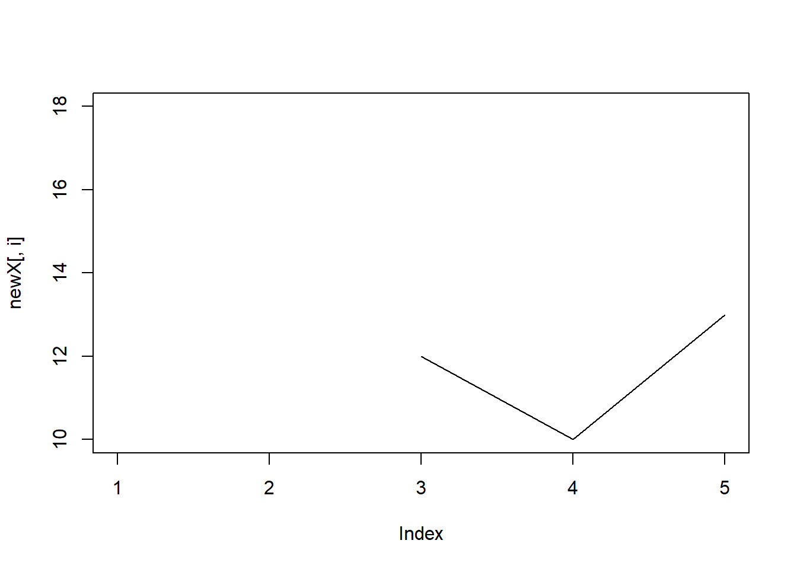

Fundamentals
## -- Attaching packages ---------------------------------- tidyverse 1.2.1 --## v ggplot2 3.1.0 v purrr 0.3.2
## v tibble 2.1.1 v dplyr 0.8.0.1
## v tidyr 0.8.3 v stringr 1.4.0
## v readr 1.3.1 v forcats 0.4.0## -- Conflicts ------------------------------------- tidyverse_conflicts() --
## x dplyr::filter() masks stats::filter()
## x dplyr::lag() masks stats::lag()As in any language, you need to understand the grammar and syntax to effectiely speak. Similarly, the key to a programming languages is understanding how data are stored and manipulated. Basic data types are things you will manipulate on a day-to-day basis in R. Differences in how they work is among the most common source of frustration among beginners and is key to getting the most out of the experience.
The next set of sections will teach you the basic’s of R’s object types along with how to store, retrieve, and change data values. We will also diver deeper into base R functions and practice making your own functions and loops. Along the way you will build a deck of 52 playing cards. When finished, your deck will look something like this:
face suit value
king hearts 13
queen hearts 12
jack hearts 11
ten hearts 10
nine hearts 9
eight hearts 8
...We will provide other contrived examples as well as illustrate concepts using the Cars93, ChickenWeight, and msleep datasets. Together, this chapter will work your way through many fundamental concepts in the R language.
R Objects
What is an object? An object is a thing – like a number, a dataset, a summary statistic like a mean or standard deviation, or a statistical test. R Objects come in many different shapes and sizes. There are simple objects like vectors (like our die and ‘heights’ examples earlier) which represent one or more numbers, more complex objects like dataframes which represent tables of data, and even more complex objects like hypothesis tests or regression which contain all sorts of statistical information.
Different types of objects have different attributes. For example, a matrix has a dim attribute (i.e., number of rows and columns) while a data set with variable headers has a names attribute. Don’t worry if this is a bit confusing now – it will all become clearer when you meet these new objects in later sections. Just know that objects in R are things, and different objects have different attributes.
Atomic Vectors
Perhaps the simplest object in R is an atomic vector, a one-dimensional object containing a single type of data. You can think of this like an excel column. In fact, our die object from the first section is a vector with six elements. You can create atomic vectors by grouping data values together with c
die <- c(1, 2, 3, 4, 5, 6)
die## [1] 1 2 3 4 5 6A scalar is a special instance of a vector with just one element of data, such as a single name or number.
# Examples of scalars
a <- 100
b <- 2 / 100
c <- (a + b) / b
a; b; c## [1] 100## [1] 0.02## [1] 5001You can save different types of data in R by using different types of atomic vectors. Altogether, R recognizes six basic types of atomic vectors: doubles/numeric, integers, characters, logicals, complex, and raw.
To create a card deck, you will need to use different types of atomic vectors to store different kinds of information (text and numbers). Different data types call for different data entry conventions (see picture above). For example, you create integer vectors by including a capital L with your input. You can create a character vector by surrounding inputs in quotation marks:
integers <- c(1L, 5L)
text <- c("ace", "five")Vector types help R behave as you would expect. For example, R will do math with atomic vectors containing numbers, but not atomic vectors containing character strings:
sum(integers) #this is okay
sum(text) #this will not workFor our purposes we restrict discussion to the most commonly used vector types: doubles (i.e., numeric), character, and logical.
Doubles
A double vector stores regular numbers. These numbers can be positive or negative, large or small, and have digits to the right of the decimal place. You can check how many distinct elements (i.e., numbers, words) are in a vector using the length() function. For instance, the vector c(1,2,3) has a length of 3.
In general, R saves any number you enter as double. This can be verified using the typeof function. For example
typeof(c(1,2,3))## [1] "double"typeof(die)## [1] "double"Some R functions and most users refer to doubles as numeric. Double is a computer science terms referring to the number of bytes your computer uses to store a number. In fact, if you ask R what class this vector belongs to it will return numeric rather than double.
class(c(1,2,3))## [1] "numeric"The distinctions between typeof and class are nuanced and will be revisited in the attributes section. For now and henceforth, we will refer to these data types as numeric.
Characters
A character vector stores small pieces of text. You can create a character vector in R by typing a character or string of characters surrounded by quotes:
text <- c("Hello", "World")
text## [1] "Hello" "World"typeof(text)## [1] "character"typeof("Hello")## [1] "character"You can combine different strings into a single string using paste() It can take any number of strings as well as an optional sep argument specifying how to seperate the strings. For example
t1 <- "Hello"
t2 <- "how"
t3 <- "are you?"
paste(t1, t2, t3)## [1] "Hello how are you?"paste(t1, t2, t3, sep = "-")## [1] "Hello-how-are you?"paste(t1, t2, t3, sep = "")## [1] "Hellohoware you?"Notice there is still a space between “are” and “you” in the last example. This is because R treats t3 as a single string rather than two different words. Compare to the following:
t1 <- "Hello"
t2 <- "how"
t3 <- "are"
t4 <- "you?"
paste(t1, t2, t3, t4, sep = "")## [1] "Hellohowareyou?"A string can contain more than just letters. You can assemble character strings from numbers or symbols as well. For instance, the vector 1 is numeric but the vector "1" is a character. You can tell strings from real numbers because strings are surrounded by quotes.
A common error when first using R is to omit a quote when entering string data. Expect an error as R will start looking for a non-existent object.
c("King", "Queen, "Jack")Logical
Logical vectors stores TRUESs and FALSEs, R’s form of Boolean data. Logicals are very helpful for doing comparisons and subsetting data, a topic we visit later. For example:
3 > 4 #Is 3 greater than 4?## [1] FALSEc(1, 2) > c(3, 4) #Is 1 greater than 3 and is 2 greater than 4?## [1] FALSE FALSEAny time you type TRUE or FALSE in capital letters (without quotations), R will treat your input as logical data. R also assumes T and F are shorthand for TRUE and FALSE, unless they are defined elsewhere (e.g., T <- 500). Since the meaning of T and F can change, its best to stick with TRUE and FALSE.
logic <- c(TRUE, FALSE, TRUE)
logic## [1] TRUE FALSE TRUEtypeof(logic)## [1] "logical"typeof(F)## [1] "logical"Exercise - Create a Royal Flush
- Create 3 different atomic vectors containing the face value, suit, and numerical values (consider ace low) of a royal flush, such as the ace, king, queen, jack, and ten of hearts. The face vector can contain the card rank (e.g., king), suit vector contain different groups (e.g., heart), and value corresponds to points (e.g., king 13, ace 1).
face <- c("ace", "king", "queen", "jack", "ten") # character vector
suit <- c("heart", "heart", "heart", "heart", "heart") # character vector
value <- c(1, 13, 12, 11, 10) # numeric vector
face; suit; value # Note: the ; allows you to execute multiple commands on the same line## [1] "ace" "king" "queen" "jack" "ten"## [1] "heart" "heart" "heart" "heart" "heart"## [1] 1 13 12 11 10Whew that was a lot of work. It would be time consuming to make a whole deck of cards this way. If only there was a faster way?
Creating Vectors
Vectors can contain any number of elements. For instance, the numbers from one to ten could be a vector of length 10, and the characters in the English alphabet could be a vector of length 26. There are many ways to create vectors in R, some of which we’ve covered. Below are some commonly used functions to create vectors.
| Function | Example | Result |
|---|---|---|
c(a, b, ...) |
c(1, 5, 9) |
1, 5, 9 |
a:b |
1:5 |
1, 2, 3, 4, 5 |
seq(from, to, by, length.out) |
seq(from = 0, to = 6, by = 2) |
0, 2, 4, 6 |
rep(x, times, each, length.out) |
rep(c(7, 8), times = 2, each = 2) |
7, 7, 8, 8, 7, 7, 8, 8 |
The simplest way to create a vector is with the c() function which we’ve already used several times. The c stands for concatenate, which means “bring them together”. The c() function takes several scalars as arguments, and returns a vector containing those objects. When using c(), place a comma in between the objects (scalars or vectors) you want to combine.
Let’s use the c() function to create a vector called a containing numbers from 1 to 5.
# Create object a with numbers from 1 to 5
a <- c(1, 2, 3, 4, 5)
a## [1] 1 2 3 4 5You can create longer vectors by combining vectors you have already defined. For instance, we can create a vector from 1 to 10 called x by combining a smaller vector a from 1 to 5 with a vector b from 6 to 10.
a <- c(1, 2, 3, 4, 5)
b <- c(6, 7, 8, 9, 10)
x <- c(a, b)
x## [1] 1 2 3 4 5 6 7 8 9 10You can duplicate vectors or interweave other numbers.
c(a, a)## [1] 1 2 3 4 5 1 2 3 4 5c(a, 100, 100, 100, b, 100, 100)## [1] 1 2 3 4 5 100 100 100 6 7 8 9 10 100 100Finally, creating vectors using c() function works the same way with elements of different data types.
c(TRUE, FALSE, TRUE)## [1] TRUE FALSE TRUEc("Serena", "June", "Nick", "Fred")## [1] "Serena" "June" "Nick" "Fred"While the c() is straighforward, it is not always efficient. Say you wanted to create participant ids from 1 to 100. You definitely don’t want to type all the numbers into a c() operator. Thankfully, R has many built-in functions for generating numeric vectors. We will explore three of them: a:b, seq(), and rep().
a:b
The a:b function takes two numeric scalars a and b as arguments, and returns a vector of numbers from the starting point a to the ending point b in steps of 1. Here are some examples of the a:b function in action. You can go backwards or forwards, or make sequences between non-integers.
1:5## [1] 1 2 3 4 55:1## [1] 5 4 3 2 1-1:-5## [1] -1 -2 -3 -4 -52.77:8.77## [1] 2.77 3.77 4.77 5.77 6.77 7.77 8.77seq()
| Argument | Definition |
|---|---|
from |
The start of the sequence |
to |
The end of the sequence |
by |
The step-size of the sequence |
length.out |
The desired length of the final sequence (only use if you don’t specify by) |
The seq() is a more flexible cousin of a:b. Like a:b, seq() allows you to create a sequence from a starting number to an ending number. However, seq() has two additional arguments: by which allows you to specify the size of the spaces between numbers or length.out specifying the length of the final sequence.
If you use the by argument, the sequence will be in steps of input to the by argument
# Create numbers from 1 to 10 in steps of 1. Note this is equivalent to 1:10
seq(from = 1, to = 10, by = 1)## [1] 1 2 3 4 5 6 7 8 9 10# Integers from 0 to 100 in steps of 10
seq(from = 1, to = 100, by = 10)## [1] 1 11 21 31 41 51 61 71 81 91# Reversed - must add negative sign to by argument
seq(from = 100, to = 1, by = -5)## [1] 100 95 90 85 80 75 70 65 60 55 50 45 40 35 30 25 20
## [18] 15 10 5Suppose we don’t know the increment value for by, but we want some evenly distributed numbers of predefined length. This is where length.out argument comes into play.
# Create 5 numbers from 0 to 20
seq(from = 0, to = 20, length.out = 5)## [1] 0 5 10 15 20# Create 3 numbers from 0 to 100
seq(from = 0, to = 100, length.out = 3)## [1] 0 50 100# Works for fractional increments as well, such as creating 10 numbers from 1 to 5
seq(from = 0, to = 5, length.out = 10)## [1] 0.0000000 0.5555556 1.1111111 1.6666667 2.2222222 2.7777778 3.3333333
## [8] 3.8888889 4.4444444 5.0000000rep()
| Argument | Definition |
|---|---|
x |
A scalar or vector of values to repeat |
times |
The number of times to repeat x |
each |
The number of times to repeat each value within x |
length.out |
The desired length of the final sequence |
The rep() function allows you to repeat a scalar (or vector) a specified number of times, or to a desired length. You can think of times as indicating how often to repeat the vector itself whereas each gives the number of times you wish to repeat each element within the vector. This is more easily shown with a few examples.
# Take the scalar 1 and repeat it 3 times
rep(x = 1, times = 3)## [1] 1 1 1# Take the vector (1,2) and repeat it 3 times
rep(x = c(1, 2), times = 3)## [1] 1 2 1 2 1 2# Repeat the character vector c("male", "female") 3 times
rep(c("Male","Female"), times = 3)## [1] "Male" "Female" "Male" "Female" "Male" "Female"Notice times repeats vectors exactly as they appear. Now see what happens when running each.
# Take the vector (1,2) and repeat 1 followed by 2 3 times
rep(x = c(1, 2), each = 3)## [1] 1 1 1 2 2 2# Replicate Male 3 times, followed by Female 3 times
rep(c("Male", "Female"), each = 3)## [1] "Male" "Male" "Male" "Female" "Female" "Female"In this case, each element is replicated 3 times before moving onto the next element in the series.
You can combine the times and each arguments within a single rep function. For example, here’s how to create the sequence {1, 1, 2, 2, 3, 3, 1, 1, 2, 2, 3, 3} with one call to rep().
rep(1:3, each = 2, times = 3)## [1] 1 1 2 2 3 3 1 1 2 2 3 3 1 1 2 2 3 3In combination with paste, the rep function is useful for creating variable labels. For instance, say we needed to insert the labels treatment1 and treatment2 ten times into a dataset to differentiate experimental conditions. We could type this, but this becomes tedious. We can accelerate as follows:
paste("treatment", rep(1:2, each = 10), sep = "")## [1] "treatment1" "treatment1" "treatment1" "treatment1" "treatment1"
## [6] "treatment1" "treatment1" "treatment1" "treatment1" "treatment1"
## [11] "treatment2" "treatment2" "treatment2" "treatment2" "treatment2"
## [16] "treatment2" "treatment2" "treatment2" "treatment2" "treatment2"Exercise - Working with Vectors to Build a Deck of Cards
- Create vector
x1as 1 to 5 and vectorx2as 6 to 10. Then, combine vectorx1andx2. - Create the vector [0, 5, 10, 15] in two ways: using
c()and theseq()with abyargument. - Use
repto create the three following vectors, each having 52 elements:
valuevector representing the numerical values of the cards from 1 to 13, repeated 4 timessuitvector representing the four classes of cards (e.g., hearts), each repeated 13 timesfacevector representing the value appearing on each card from lowest (ace) to highest (king), repeated 4 times
Note: check your answers to the 3rd question with the length function. This will tell you how many elements are in each vector. In this case, all three card vectors should have a length of 52.
Solution
#First problem
x1 <- 1:5
x2 <- 6:10
c(x1, x2)## [1] 1 2 3 4 5 6 7 8 9 10#Second problem
x <- c(0, 5, 10, 15)
y <- seq(from = 0, to = 15, by = 5)
x; y## [1] 0 5 10 15## [1] 0 5 10 15#Third problem
value <- rep(1:13, times = 4)
suit <- rep(c("hearts", "diamonds", "clubs", "spades"), each = 13)
char <- c("ace", "two", "three", "four", "five", "six", "seven", "eight", "nine", "ten", "jack", "queen", "king")
face <- rep(char, times = 4)Simulate Random Data
As a language for statistical analysis, R carries functions for generating random data – either from a vector of data (like how we sampled die rolls), or from an established probability distribution, like the Normal, Binomial, or Uniform distribution. Rather than create your own values, R can generate data given certain parameters (Mean, SD) or randomly sample values from a larger set.
This serves many purposes. First, you can emulte other’s work using published results to create data with the same properties. This allows evaluation and replication of other’s models. Two, simulations can be used to advance psychological theories. Much like climate models, we can project what will hapen given different parameters and hypotheses and then compare these simulated results to observation. This has been done to understand many topics where conventional research strategies can be limited, including human development, complex learning, and emotional dynamics. Three, you can run monte carlo simulations to evaluate performance of different statistical estimators and determine study power. Finally, simulations can be used to help you learn. Successfully simulating data to emulate a statistical model will given you deeper intuition into the meaning and nature of your analyses.
Sample
Exercise - Drawings and Earnings
- Randomly sample
Attributes
| Function | Definition |
|---|---|
attributes(x) |
Access object’s metadata |
names(x) |
Retrieve or set names of an R object |
dim(x) |
Retrieve or set dimensions of an R object |
class(x) |
Class or type of object |
An attribute is a piece of information attached to an R object, including atomic vectors. Attributes won’t affect object values and are often hidden from view. You can think of an attribute as “metadata”; it is just a convenient place to put information associated with an object. R will normally ignore this metadata, but some R functions will check for specific attributes. These functions may use the attributes to do special things with the data.
You can view an object’s attributes with attributes. The attributes function returns NULL if an object has no attributes. An atomic vector, like die, won’t have any attributes unless you give it some:
attributes(die)## NULLR uses NULL to represent an empty object. NULL is often returned by functions whose values are undefined. You can create a NULL object by typing NULL in capital letters.
The most common attributes for an atomic vector are names, dimensions (dim), and class. You can use each of these functions to check whether objects have values for each of these attributes. We will briefly discuss each attribute in turn.
Names
Names are simply labels for each element in a vector. R has a built-in data vector called islands providing areas for the world’s 48 largest islands in thousands of square miles. If you print islands to your console you will see the square mileage and, above each number, the name associated with the island. These can be directly accessed using the names function.
names(islands)## [1] "Africa" "Antarctica" "Asia"
## [4] "Australia" "Axel Heiberg" "Baffin"
## [7] "Banks" "Borneo" "Britain"
## [10] "Celebes" "Celon" "Cuba"
## [13] "Devon" "Ellesmere" "Europe"
## [16] "Greenland" "Hainan" "Hispaniola"
## [19] "Hokkaido" "Honshu" "Iceland"
## [22] "Ireland" "Java" "Kyushu"
## [25] "Luzon" "Madagascar" "Melville"
## [28] "Mindanao" "Moluccas" "New Britain"
## [31] "New Guinea" "New Zealand (N)" "New Zealand (S)"
## [34] "Newfoundland" "North America" "Novaya Zemlya"
## [37] "Prince of Wales" "Sakhalin" "South America"
## [40] "Southampton" "Spitsbergen" "Sumatra"
## [43] "Taiwan" "Tasmania" "Tierra del Fuego"
## [46] "Timor" "Vancouver" "Victoria"What if we tried to access the names attribute for our die object?
names(die)## NULLNULL indicates there are no names because we haven’t assigned any! You can give names to die by assigning a character vector to the output of names. Think of this as filling in NULL with information. Importantly, the vector should include one name for each element in die
names(die) <- c("one", "two", "three", "four", "five", "six")Now die has a names attribute you can access, view, and manipulate.
# Directly access names
names(die)## [1] "one" "two" "three" "four" "five" "six"# View all attributes (just names for now)
attributes(die)## $names
## [1] "one" "two" "three" "four" "five" "six"Like the islands vector, R displays names above the numerical values of die whenever you print the vector.
die## one two three four five six
## 1 2 3 4 5 6However, as noted above, attributes do not affect the values of the vector. Hence, names won’t change the values nor will names be affected if you alter the vector’s values.
die + 1## one two three four five six
## 2 3 4 5 6 7You can use names whenever you wish to change the names attribute or if you decide to remove them all together.
# change the names of die
names(die) <- c("I", "II", "III", "IV", "V", "VI")
die## I II III IV V VI
## 1 2 3 4 5 6# Remove names attribute from die by setting to NULL
names(die) <- NULL
die## [1] 1 2 3 4 5 6Dim
So far we have only worked with one-dimensional vectors. However, most data structures - such as survey or experimental results - are stored in two-dimensional structures of rows and columns (or higher dimensions such as cubes). R handles this by assigning a dim attribute to vectors to transform them into an n-dimensional array. To do this, set the dim attribute to a numeric vector of length n. R will reorganize the elements of the vector into n dimensions, with each dimension having as many rows (or columns) as the as the nth value of the dim vector. For example, you could reorganize th die vector into a 2 x 3 matrix (2 rows by 3 columns).
dim(die) <- c(2, 3)
die## [,1] [,2] [,3]
## [1,] 1 3 5
## [2,] 2 4 6or a 3 x 2 matrix (3 rows by 2 columns)
dim(die) <- c(3, 2)
die## [,1] [,2]
## [1,] 1 4
## [2,] 2 5
## [3,] 3 6You can even assign the vector to a matrix with one column or row, effectively giving the vector an arbitrary dimension beyond its length().
# stack vector into 1 column with 6 rows
dim(die) <- c(6, 1)
die## [,1]
## [1,] 1
## [2,] 2
## [3,] 3
## [4,] 4
## [5,] 5
## [6,] 6# spread vector into 6 columnas with 1 row
dim(die) <- c(1, 6)
die## [,1] [,2] [,3] [,4] [,5] [,6]
## [1,] 1 2 3 4 5 6Note R will always use the the first value in dim for the number of rows and the second value for number of columns. In general, rows always precede columns in R operations dealing with matrices. We can spread the data out into higher dimensions, such as a hypercube with three dimensions 1 x 2 x 3. Since we often do not deal with such structures, we will focus on 2-dimensional arrays, also known as matrices.
Matrices
| Function | Description | Example |
|---|---|---|
matrix(x, nrow, ncol, byrow) |
Create a matrix from vector x |
matrix(x = 1:12, nrow = 3, ncol = 4) |
cbind(a, b, c) |
Combine vectors as columns in a matrix or dataframe | cbind(1:5, 6:10, 11:15) |
rbind(a, b, c) |
Combine vectors as rows in a matrix or dataframe | rbind(1:5, 6:10, 11:15) |
A matrix is a rectangular arrangement of the same type of data elements into rows and columns. Matrices form the mathematical machinery of many multivariate statistical techniques, such as factor analysis, multivariate regression, and structural equation modeling. You can do traditional matrix operations in R, such as transposition with t, finding a determinant with det, and running inner or outer multiplication with the %*% and `%o% operators, respectively.
In R, any vector with 2 dimensions automatically becomesa a matrix (see classes below) with The dim attribute determining size in terms of height and width. It may be easier to think of a matrix as a combination of n vectors, where each vector has a length of m. For instance, in the image below the vector has a length of 3 while the matrix is three vectors each 3 elements long (a 3 x 3 matrix).

The matrix() function creates a matrix from a single vector of data. The function has 4 main inputs: data - a vector of data, nrow - the number of rows you want in the matrix, ncol - the number of columns you want in the matrix, and byrow - a logical value indicating whether you want to fill the matrix by rows. Check the help function ?matrix to see some additional inputs and examples.
| Argument | Definition |
|---|---|
data |
Optional data vector to be reorganized into a matrix |
nrow |
Desired number of rows |
ncol |
Desired number of columns |
byrow |
Logical. If False, matrix filled by rows otherwise filled by rows |
matrix(
data = c(1:10), # the data elements
nrow = 2, # the number of rows
ncol = 5, # the number of columns
byrow = F, # default argument. Fill by column
)## [,1] [,2] [,3] [,4] [,5]
## [1,] 1 3 5 7 9
## [2,] 2 4 6 8 10We can change the above to give us 5 rows and 2 columns instead
matrix(data = 1:10,
nrow = 5,
ncol = 2)## [,1] [,2]
## [1,] 1 6
## [2,] 2 7
## [3,] 3 8
## [4,] 4 9
## [5,] 5 10Say we wanted to repeat above, but fill by row instead of column
matrix(data = 1:10,
nrow = 5,
ncol = 2,
byrow = TRUE)## [,1] [,2]
## [1,] 1 2
## [2,] 3 4
## [3,] 5 6
## [4,] 7 8
## [5,] 9 10You can also populate a matrix with characters. However, you cannot mix and match numbers with words. R will coerce everything to be of a same type (more on this later).
# matrix of characters with 2 rows
matrix(c("a", "b", "c", "d"), nrow = 2)## [,1] [,2]
## [1,] "a" "c"
## [2,] "b" "d"cbind() and rbind() can be used to create matrices by combining several vectors of the same length. You can also use these functions to add new rows or columns of data to an existing matrix or dataframe (covered later). cbind() combines vectors as columns, while rbind() combines them as rows. Let’s use these functions to create a matrix with the numbers 1 through 30. First, we’ll create three vectors of length 5, then we’ll combine them into one matrix.
x <- 1:5
y <- 6:10
z <- 11:15
# create a matrix where x, y, and z are columns
cbind(x, y, z)## x y z
## [1,] 1 6 11
## [2,] 2 7 12
## [3,] 3 8 13
## [4,] 4 9 14
## [5,] 5 10 15# create a matrix where x, y, and z are rows
rbind(x, y, z)## [,1] [,2] [,3] [,4] [,5]
## x 1 2 3 4 5
## y 6 7 8 9 10
## z 11 12 13 14 15# Can also use to add on columns or rows to existing matrices
m <- cbind(x, y, z)
xx <- 16:20
cbind(m, xx)## x y z xx
## [1,] 1 6 11 16
## [2,] 2 7 12 17
## [3,] 3 8 13 18
## [4,] 4 9 14 19
## [5,] 5 10 15 20Exercise - Build a Matrix
- Create the following matrix
## [,1] [,2]
## [1,] 1 3
## [2,] 2 4- Complete the following matrix using your
dieobject
## [,1] [,2] [,3]
## [1,] 1 2 3
## [2,] 4 5 6- Create the following three of a kind matrix, which stores the name and suits of different cards
## [,1] [,2]
## [1,] "king" "heart"
## [2,] "king" "spade"
## [3,] "king" "club"- Use
cbindto merge yoursuitandfacevectors into a matrix.
Solution
# Problem 1
matrix(1:4, nrow = 2, ncol = 2)# Problem 2
matrix(die, nrow = 2, byrow = TRUE)# Problem 3 - multiple approaches
hand <- c("king", "king", "king", "heart", "spade", "club")
matrix(hand, nrow = 3)
matrix(hand, ncol = 2)
dim(hand) <- c(3, 2)
# Could also start with character vector listing cards in alternating order. In this case, you will need to ask R to fill matrix by row instead of by column.
hand1 <- c("king", "heart", "king", "spade", "king", "club")
matrix(hand1, nrow = 3, byrow = TRUE)
matrix(hand1, ncol = 2, byrow = TRUE)# Problem 4 - cbind
cbind(suit, face)## suit face
## [1,] "hearts" "ace"
## [2,] "hearts" "two"
## [3,] "hearts" "three"
## [4,] "hearts" "four"
## [5,] "hearts" "five"
## [6,] "hearts" "six"
## [7,] "hearts" "seven"
## [8,] "hearts" "eight"
## [9,] "hearts" "nine"
## [10,] "hearts" "ten"
## [11,] "hearts" "jack"
## [12,] "hearts" "queen"
## [13,] "hearts" "king"
## [14,] "diamonds" "ace"
## [15,] "diamonds" "two"
## [16,] "diamonds" "three"
## [17,] "diamonds" "four"
## [18,] "diamonds" "five"
## [19,] "diamonds" "six"
## [20,] "diamonds" "seven"
## [21,] "diamonds" "eight"
## [22,] "diamonds" "nine"
## [23,] "diamonds" "ten"
## [24,] "diamonds" "jack"
## [25,] "diamonds" "queen"
## [26,] "diamonds" "king"
## [27,] "clubs" "ace"
## [28,] "clubs" "two"
## [29,] "clubs" "three"
## [30,] "clubs" "four"
## [31,] "clubs" "five"
## [32,] "clubs" "six"
## [33,] "clubs" "seven"
## [34,] "clubs" "eight"
## [35,] "clubs" "nine"
## [36,] "clubs" "ten"
## [37,] "clubs" "jack"
## [38,] "clubs" "queen"
## [39,] "clubs" "king"
## [40,] "spades" "ace"
## [41,] "spades" "two"
## [42,] "spades" "three"
## [43,] "spades" "four"
## [44,] "spades" "five"
## [45,] "spades" "six"
## [46,] "spades" "seven"
## [47,] "spades" "eight"
## [48,] "spades" "nine"
## [49,] "spades" "ten"
## [50,] "spades" "jack"
## [51,] "spades" "queen"
## [52,] "spades" "king"Class
Recall earlier we ran typeof and class on the vector c(1,2,3) and received different output. This arises from subtle differences in the evolution of R from S as a language during the 1980s, and is further discussed on stack overflow. The distinction is trivial. The only thing you need to know is class is an attribute assigned to different objects which determine how generic R functions, such as mean or subset, operate with it. You can think of type as the physical representation of data whereas class is a logical blueprint giving R further information on how to represent and use the object.
To illustrate, note that changing the dimensions of your object will not change the type of object, but it will change the object’s class attribute:
dim(die) <- c(2, 3)
typeof(die)## [1] "double"class(die)## [1] "matrix"A matrix is just a special case of an atomic vector. For example, every element of the die matrix is still a double, but now the elements have been arranged into a new 2 x 3 structure. R added a class attribute to die when you changed its dimensions which now describes die’s new format. Many R functions will specifically look for an object’s class attribute, and then handle the object in a predetermined way based on the attribute. We will briefly look at two frequently used R classes designed for specialized data: Times and Factors
Dates and Times
The class attribute allows R to represent data types beyond numbers and words, often in a way that reflects a hybrid of more fundamental types. For instance, time looks like a character string when you display it, but underneath is storeid as a double or numeric form. It has two attached classes: POSIXct and POSIXt.
now <- Sys.time()
now## [1] "2019-07-17 22:41:05 EDT"typeof(now)## [1] "double"class(now)## [1] "POSIXct" "POSIXt"POSIXct, also known as calendar time, is the number of seconds since the beginning of 1970, in the Universal Time Coordinate (UTC) timezone (GMT as described by the French). For example, the time above occurss 1563417666 seconds after 1970-01-01 in UTC time. This means in the POSIXct system, R is storing this information as the actual number 1563417666. You can directly access this vector by removing the class attribute from now using the unclass function.
unclass(now)## [1] 1563417666So how does R change this into a date? A corresponding class is POSIXlt, or local time which is a list of different time attributes (e.g., days, months, years, hours, timezone). To view these components directly, we need to first convert a date-time format using as.POSIXl and then use unclass to pull out the raw information.
unclass(as.POSIXlt(Sys.time()))## $sec
## [1] 5.826298
##
## $min
## [1] 41
##
## $hour
## [1] 22
##
## $mday
## [1] 17
##
## $mon
## [1] 6
##
## $year
## [1] 119
##
## $wday
## [1] 3
##
## $yday
## [1] 197
##
## $isdst
## [1] 1
##
## $zone
## [1] "EDT"
##
## $gmtoff
## [1] -14400
##
## attr(,"tzone")
## [1] "" "EST" "EDT"R integrates these two formats together with its own virtual class POSIXt to change seconds into a human readable date format, such as January 1, 1970, 1999/12/31, or 2019-07-11 14:16:55. This enables operations such as subtracting different date formats. For instance, you could do the following:
# Subtract two dates formatted with different symbols
as.Date("10-12-25") - as.Date("09/12/25")## Time difference of 365 daysYou can also directly add seconds to a date and R will produce a new date. Say we wanted to know how many years in the future before a billion seconds elapses.
# Add a billion seconds to the current time
Sys.time() + 1000000000## [1] "2051-03-26 00:27:45 EDT"Wow. That is over 30 years from today’s date!
Or, you could take any number and assign it the POSIXct class to see how much time elapsed since Jan 1, 1970. For example, how long does it take for a million seconds to elapse?
# store 1 million as an object mil
mil <- 1000000
mil## [1] 1e+06# Assign time classes to the number one million and print results
class(mil) <- c("POSIXct", "POSIXt")
mil## [1] "1970-01-12 08:46:40 EST"January 12, 1970. Wow! A million seconds goes by much faster than a billion. This conversion works well because the POSIXct doesn’t require further attributes or specification. However, in general it is a bad idea to try and force the class of an object. MOre often than not this will lead to errors and incompatibility across functions.
There are numerous data classes in R and its packages, and new classes are invented every day. This is part of what makes R unique but also frustrating to many programmers. Classes allows for idiosyncratic differences in how data are stored and represented, leading to variability in how programs run and function. This is rarely problematic as most classes are not hard baked into R’s programming language. However, there is one exception that is so ubiquitous it should be learnt along vector types and is the chagrin to many. That class is factors.
Factors
Factors are R’s way of storing categorical variables, like ethnicity or type of animal, and independent variables, such as treatment and control or different experimental conditions. Factors are an important class for statistical analyses and will alter your analyses and plotting if not careful. For example, ANOVA functions often expect factors as input.
There are a few unique properties of factors. First, they can only take on a predefined set of discrete levels (e.g., experiment or control - nothing else). Second, factors are stored as integers (either ordered or unordered), and unique labels associated with these integers. While factors look (and often behave) like character vectors, they are actually integers under the hood. Let’s look at some examples.
Below is a relationship vector containing the romantic status of 4 individuals. We have abbreviated the labels.
# Relationship status of 4 people. S = single and M = Married.
relstat <- c("S", "M", "M", "S")There are only two possible categories or factor levels in this data: S for Single and M for Married. The factor function can take vectors like this and automticallyy encode them as factors.
| Argument | Definition |
|---|---|
x |
Vector of data to convert (accepts character, numeric, logical) |
levels |
Vector specifying unique factor levels. Can be rearranged to set the order. |
labels |
Optional character vector to assign printed labels. Must be same order as levels. |
ordered |
Logical. If TRUE, indicates levels should be treated as ordinal |
If you enter relstat into factor, R recodes the data as integers and store the results in an integert vector. It also assigns a levels attribute to the integer in alphabetic order. Finally, the class attribute now contains factor.
relstat <- factor(relstat)
typeof(relstat) #Verify the data is really integer behind the hood## [1] "integer"attributes(relstat) # Show the levels and class attribute ## $levels
## [1] "M" "S"
##
## $class
## [1] "factor"relstat## [1] S M M S
## Levels: M SR will assign 1 to the level M and 2 to the level S (because M comes first in the alphabet even though the first element in this vector is S). You can see this implicit ordering by calling the levels() function or see exactly how R is storing the factor with unclass. Underneath the hood it is more apparent how R swaps the numbers with the levels attribute when printing a factor object.
levels(relstat)## [1] "M" "S"unclass(relstat)## [1] 2 1 1 2
## attr(,"levels")
## [1] "M" "S"Sometimes factor orders matter. Othertimes you may want a certain level to be the referent (i.e., comparison group) in an analysis. In either case, you can use the levels function to specify a new ordering. For instance, if we wanted single people to be the referent we could do the following.
relstat <- factor(relstat, levels = c("S", "M"))
relstat## [1] S M M S
## Levels: S MNotice S appears before M in levels meaning we have succesfully flipped the ordering. Say we wanted R to further spell out what these factor abbreviations mean. We can do so with the labels function.
factor(relstat, labels = c("Single", "Married")) # Note labels will correspond to current level order## [1] Single Married Married Single
## Levels: Single MarriedBe careful with labels. They must be in the same order as levels. If you flip them, R has no way of telling you the labels are wrong. In the following, we have mislabeled the data so now Single shows up as Married and vice versa.
relstat## [1] S M M S
## Levels: S Mfactor(relstat, labels = c("Married", "Single"))## [1] Married Single Single Married
## Levels: Married SingleIf the factor contains ordinal information (e.g., “low”, “medium” and “high”) then you may want to set ordered to true. R will now treat this as quasi-numerical which allows minimal calculations. Say we were doing a study on food intake and wanted to identify the condition with the lowest amount of eating.
# food factor without level information. Ordered based on alphabet
food <- factor(c("low", "medium", "high", "high", "low", "medium"))
levels(food)## [1] "high" "low" "medium"# Switch levels but do not change ordered to true
food <- factor(food, levels = c("low", "medium", "high"))
levels(food)
min(food) # as for smallest level. Will not work.# Switch levels and set ordered to true
food <- factor(food, levels = c("low", "medium", "high"), ordered = TRUE)
min(food) # Works## [1] low
## Levels: low < medium < highIn the last example, these factors are represented by numbers (1, 2, 3) rather than nominal integer values.
Similiar to the rep function, you can use the gl function to generate factors. It takes two integers as input, an n indicating the number of levels and a k indicating the number of replications. Using our relationship status example with the new category of Divorced, we could do the following.
gl(3, 3, labels = c("Single", "Married", "Divorced"))## [1] Single Single Single Married Married Married Divorced Divorced
## [9] Divorced
## Levels: Single Married DivorcedA final yet important note, R has a nasty habit of converting character strings to factors when you load and create data. Programmers and researchers hate this behavior because R is making decisions without your consent. Even numeric values are sometimes converted to factors, often when a missing value is encoded with a special symbol usch as . or -. We will discuss this more in the data management section.
In cases where a string is inadvertently converted to a factor, use the as.character function to change back to pure strings.
as.character(relstat)## [1] "S" "M" "M" "S"Exercise - Factor Conversion
Convert your
suitvector to a factor with the following level order: hearts, diamonds, spades, clubsConvert your
facevector to a factor and then unclass. What do the numbers indicate? Now, convertfaceto another factor with only the levelsace,king, andqueen. what happens?
Coercion and Conversion
Many card games assign different point values to different cards. For instance, in blackjack all face cards are worth ten points. What happens if we try to make a vector by combining “king”, “heart”, and 10 together? Test it out.
card <- c("king", "heart", 10)
card## [1] "king" "heart" "10"typeof(card)## [1] "character"R has changed the number 10 into a character! If you recall, R requires all elements in a vector (including matrices) to be of the same type; if you violate this rule, R will convert elements to a single type of data. See what happens if we try to combine logicals and numbers in a matrix.
a <- rep(TRUE, 5) # vector of 5 T values
b <- 1:5 # vector of numbers
cbind(a, b) # combine logic and numbers## a b
## [1,] 1 1
## [2,] 1 2
## [3,] 1 3
## [4,] 1 4
## [5,] 1 5The logical values are now numbers! These alterations may seem inconvenient, but they are not arbitrary. R always follows the same coercion rules. Once you are familiar with the rules, you can actually use this behavior for many useful things!
Whenever you attempt to combine different data types, R coerces everything in the vector to the most flexible type. Types from least to most flexible are: logical, double, and character. Hence, if there is just one “character string” in a vector, R will convert everything else in the vector to a character string. If a vector only contains logicals and numbers, R will convert all logicals to numbers: every TRUE becomes a 1, and every FALSE becomes a 0, as shown below.

This arrangement preserves information. It is easy to look at a character string and tell what information it use to contain. For example, you can easily spot the origins of “TRUE”, “True”, and “1” in a character vector. You can also easily back-transform a vector of 1s and 0s to TRUEs and FALSEs.
sum(c(TRUE, TRUE, FALSE, TRUE)) # Under the hood, R converts the T's to 1 and the F to 0## [1] 3R took the sum function and counted the number of TRUEs in the logical vector (mean calculate proportion). We will revisit this behavior in later sections.
You can instruct R to coerce a vector or other R objects to a different data types or class using the as function. We did this using the as.POSIXlt and factor commands to convert numbers and strings into dates and factors. Some more common conversions are changing character vectors into other types, making factors into continuous numbers, or forcing numbers into logical statements. For example, you may decide what you thought was a discrete-like variable is better represented as continuous and desire to change a factor to a number.

Here are some simple examples
as.character(1:2)## [1] "1" "2"as.logical(0:1)## [1] FALSE TRUEas.numeric(c(TRUE, FALSE))## [1] 1 0as.numeric(as.logical(c("TRUE", "FALSE", "blah"))) # Nest as functions to downgrade multiple data types## [1] 1 0 NAMany datasets contain different kinds of data which programs like Excel and SPSS save in single data set. Don’t worry, R can do this too! To avoid issues of coercion, we use two special object types: lists and data frames.
What the Hell you might say - if vectors and matrices can’t hold multiple types of data, why even use them? A few answers. First, because they are simpler, matrices and vectors tak up less computational space and execute operations faster. Second, these data structures are needed for certain mathematical operations on large number sets. There is a whole field of matrix algebra dedicated to just said operations! Three, sometimes you only require a single data type making vectors and matrices a better way of organizing your data.
Exercise - Run and Evaluate Coercion
- Perform the following coercions. What happens in each case and why?
- Convert
valueto a character - Convert
suitto a factor - Convert
faceto numeric
- What happens to the values in each of the following:
log_num <- c(TRUE, 2, FALSE, 0, 1, TRUE)char_num <- c("a", 1, "b", 2, "c", 3)tricky <- c(1, 2, 3, "4")
- How many values in
combined_logicalobject end up as “TRUE” (i.e., as a character)
num_logical <- c(1, 2, 3, TRUE)
char_logical <- c("a", "b", "c", TRUE)
combined_logical <- c(num_logical, char_logical) Lists

Lists are like atomic vectors because they group data into a one-dimensional set. However, lists do not group together individual values; lists group together R objects of different types and lengths. For example, we could include a numeric vector length 50 in the first element, character vector length 1 in the second element, and a new list of length 2 in its third element. To do so, use the list function which operators like the c function for vectors.
list <- list(1:50, "Hi", list(TRUE, FALSE))
list ## [[1]]
## [1] 1 2 3 4 5 6 7 8 9 10 11 12 13 14 15 16 17 18 19 20 21 22 23
## [24] 24 25 26 27 28 29 30 31 32 33 34 35 36 37 38 39 40 41 42 43 44 45 46
## [47] 47 48 49 50
##
## [[2]]
## [1] "Hi"
##
## [[3]]
## [[3]][[1]]
## [1] TRUE
##
## [[3]][[2]]
## [1] FALSEThe initial double-bracketed indices (e.g., [[1]]) tell you which element of the list is being displayed. For instance, [[1]] refers to the 1:50 numerical vector, [[2]] refers to the "Hi" character vector, and [[3]] refers the sub-list. The single-bracket (e.g., [1]) indices tell you which sub-element of a list element is being displayed. For example, 30 is the 30th sub-element of the first element in the list. Hi is the first sub-element of the list’s second element. This two-system notation arises because each eleemnt of a list can be any R object, including a new vector (or list) with its own indices. For instance, TRUE is embedded in its own list within a list, hence the [[3]][[1]] notation stating the first element of the 2nd list which is itself the 3rd element of the 1st list. Bonkers right!
The above example is a little archaic and doesn’t illustrate the real power of lists. Many R functions store output in lists because they are a highly flexible storage containers. These lists often name the components, such as coefficients, standard errors, tvalue, and warning messages to store output of various analyses, such as a linear regression. This allows researchers to pull just the information they need, whether it be a single p-value or an entire set of beta weights.
For example, say your a super huge HBO fan and decided to store information all about the popular show Game of Thrones.
In this list, you might provide the show’s title, number of seasons, name of your favorite characters, and small set of numeric reviews out of 10. You can assign names to each component by typing the label followed by an = sign and then an input vector. This allows several vectors of different length and type to accomodate different forms of information. Here is an example.
GOT <- list(showname = "Game of Thrones",
seasons = 8,
characters = c("Tyrion Lannister", "Jaime Lannister", "Bran Stark", "Arya Stark",
"Jon Snow", "Daenerys Targaryen"),
reviews = c(9, 10, 9, 10, 10, 8)
)
GOT## $showname
## [1] "Game of Thrones"
##
## $seasons
## [1] 8
##
## $characters
## [1] "Tyrion Lannister" "Jaime Lannister" "Bran Stark"
## [4] "Arya Stark" "Jon Snow" "Daenerys Targaryen"
##
## $reviews
## [1] 9 10 9 10 10 8As you can imagine, the structure of lists can become quite complicated, but this flexibility makes lists a useful all-purpose storage tool in R: you can group together anything with a list. Let’s practice.
Exercise - Make a List
- Use a named list to store a single playing card, like the ten of clubs, which has a point value of 10. The list should save the face of the card, the suit, and point value as seperate labeled elements.
Solution
card <- list(face = "ten",
suit = "clubs",
value = "10")
card## $face
## [1] "ten"
##
## $suit
## [1] "clubs"
##
## $value
## [1] "10"We can also use a list to store a whole deck of cards. You could save each card as its own list in a list (52 sublists) or have three elements each with all suits, values, and faces (three 52 element vectors). However, there is a much cleaner way to represent this information using a special type of list, known as a data frame.
Data Frames
| Function | Description | Example |
|---|---|---|
data.frame() |
Create a dataframe from named columns | data.frame(age = c(19, 21), sex = c("m", "f") |
str(x), summary(x) |
Show structure (i.e., dimensions and classes) and summary statistics | str(mtcars), summary(mtcars) |
head(x), tail(x) |
Print the first few rows (or last few rows). | head(mtcars), tail(mtcars) |
nrow(x), ncol(x), dim(x) |
Count the number of rows and columns | nrow(mtcars), ncol(mtcars), dim(mtcars) |
rownames(), colnames(), names() |
Show the row (or column) names | rownames(mtcars), names(mtcars) |
A data frame is the most common way of storing data in R, and if used systematically makes data analysis easier. Under the hood, a data frame is a list of equal-length vectors. This makes it a 2-dimensional structure, so it shares properties of both the matrix and the list. It is R’s equivalent to an Excel spreadsheet because it stores data in a similiar format.
Data frames group vectors together into a table where each vector becomes a column. Each column can contain different data types but all cells within a column must be the same type of data.

To create a dataframe from vectors, use thedata.frame function. The data.frame() function works very similarly to cbind() - the only differences is that in data.frame() you specify names for each of the columns as you define them. Remeber to separate each vector by a comma. Let’s create a simple dataframe called survey using the data.frame function with a mixture of text and numeric columns.
# Create a dataframe of survey data
survey <- data.frame("index" = c(1, 2, 3, 4, 5),
"sex" = c("m", "m", "m", "f", "f"),
"age" = c(99, 46, 23, 54, 23))
survey## index sex age
## 1 1 m 99
## 2 2 m 46
## 3 3 m 23
## 4 4 f 54
## 5 5 f 23In the previous code, I named the columns in survey index, sex, and age, but you can name them whatever you want. If you look at the typeof function for a data frame, you will see it is actually a list. In fact, each data frame is a list with class data.frame which makes it behave like a matrix.
typeof(survey)## [1] "list"class(survey)## [1] "data.frame"Two useful functions for getting an overall sense of your data are str and summary. str provides the dimensions, types of objects grouped together, and other summary information for a data.frame (or list). summary provides some descriptive statistics. Let’s look at each in turn.
str(survey)## 'data.frame': 5 obs. of 3 variables:
## $ index: num 1 2 3 4 5
## $ sex : Factor w/ 2 levels "f","m": 2 2 2 1 1
## $ age : num 99 46 23 54 23You can see there are 5 participants with 3 variables, each of which is listed along with its data type. R will display the first several values for each variable. Second, it converted the string column sex to a factor, assuming there were only 2 levels, f and m. Let’s run summary on survey.
summary(survey)## index sex age
## Min. :1 f:2 Min. :23
## 1st Qu.:2 m:3 1st Qu.:23
## Median :3 Median :46
## Mean :3 Mean :49
## 3rd Qu.:4 3rd Qu.:54
## Max. :5 Max. :99R has given us frequencies for the sex factor and descriptive information such as a sense of the range, quartiles, and central tendencies for numerical columns of index and age. This can be helpful for finding outliers, data entry errors, or getting a sense of your data’s distributions.
One key argument to data.frame() and similiar functions is stringsAsFactors. As noted above, R went ahead and changed your string variables to factors without your permission. Sometimes this is what you want. More often than not this leads to weirdness and frustration. Take the following example where there was a slight alteration in how the sex data were entered.
survey2 <- data.frame(index = 1:5,
sex = c("m", "M", "m", "F", "f"), # notice upper and lower cases
age = c(99, 46, 23, 54, 23))
str(survey2)## 'data.frame': 5 obs. of 3 variables:
## $ index: int 1 2 3 4 5
## $ sex : Factor w/ 4 levels "f","F","m","M": 3 4 3 2 1
## $ age : num 99 46 23 54 23Notice R now thinks sex has four levels instead of two. This can lead to all kinds of silliness in analyses and plots. Things become even messier when R tries to make data like addresses, phone numbers, or other raw textual data into very large factors. To prevent this from happening, set the argument stringsAsFactors = FALSE within data.frame.
survey2 <- data.frame(index = 1:5,
sex = c("m", "M", "m", "F", "f"),
age = c(99, 46, 23, 54, 23),
stringsAsFactors = F) # Add this argument
str(survey2)## 'data.frame': 5 obs. of 3 variables:
## $ index: int 1 2 3 4 5
## $ sex : chr "m" "M" "m" "F" ...
## $ age : num 99 46 23 54 23Looking at the new version we can see no factors were retained. There are several other useful helper functions to navigate dataframes. To quickly get a glimpse of the first or last rows of a dataframe, use head and tail. We can quickly glimpse the built-in R dataset ChickenWeight to get a sense of the information inside.
# Show first few rows
head(ChickWeight)## Grouped Data: weight ~ Time | Chick
## weight Time Chick Diet
## 1 42 0 1 1
## 2 51 2 1 1
## 3 59 4 1 1
## 4 64 6 1 1
## 5 76 8 1 1
## 6 93 10 1 1# Show last few rows
tail(ChickWeight)## Grouped Data: weight ~ Time | Chick
## weight Time Chick Diet
## 573 155 12 50 4
## 574 175 14 50 4
## 575 205 16 50 4
## 576 234 18 50 4
## 577 264 20 50 4
## 578 264 21 50 4We can run View() to see a new window like the one below showing the data.
View(ChickWeight)
Finally, all name and dimensional attributes can be accessed using the same functions as before, names and dim. There are also the more specialized nrow or ncol as well as rownames or colnames options for accessing just one side.
nrow(ChickWeight)## [1] 578dim(ChickWeight)## [1] 578 4names(ChickWeight)## [1] "weight" "Time" "Chick" "Diet"colnames(ChickWeight)## [1] "weight" "Time" "Chick" "Diet"We will explore how to slice, modify, and run calculations on data frames and vectors. R Studio provides a helpful set of cheat sheets on a variety of topics, including how to work with basic R objects. Here is a snippet of some basic notations, along with illustrations of subsetting which we will cover shortly.

Available Dataframes in R
Now you know ho to use functions like cbind() and data.frame() to make your own data frames. However, for demonstration purposes, it’s frequently easier to use existing data frames rather than always creating your own. Thankfully, R has use covered: R has several datasets that come pre-installed in a package called datasets – you don’t need to install this package, it’s included with base R. In addition, there are some useful datasets in the tidyverse package which we will use to illustrate certain data wrangling principles. These data sets allow all R users to test and compare code on the same information and see if they can replicate other examples. To see a complete list of all the datasets included in the datasets package, run the code: library(help = "datasets"). The table below shows a few datasets that we will be using in future examples.
| Dataset | Description | Rows | Columns |
|---|---|---|---|
ChickWeight |
Experiment on the effect of diet on early growth of chicks. | 578 | 4 |
Cars93 (load MASS) |
Features of different cars from 1993. | 93 | 27 |
msleep (load tidyverse) |
Sleep habits for a variety of mammals and insects. | 83 | 11 |
PlantGrowth |
Results from an experiment to compare yields (as measured by dried weight of plants) obtained under a control and two different treatment conditions. | 30 | 2 |
Exercises - Building and Exploring Dataframes
A data frame is a great way to build an entire deck of cards. You can make each row a playing card and each column a type of value - each with its own appropriate data type. Using the
data.framefunction, combine yourface,suit, andvaluevectors into a data.frame calleddeck.Use
stron theCars93data frame (available fromMASSpackage). What are the dimensions and data types? Can you deduce what some of the variables tell us about different cars?Use the
summaryon theChickWeightdata frame. What is the average weight of a baby Chick (reported in grams)? Further, can you figure out how manydietconditions exist and how many days the chickens were measured?
Solutions
# Solution 1
deck <- data.frame(face = face,
suit = suit,
value = value)# Solution 2
str(MASS::Cars93)## 'data.frame': 93 obs. of 27 variables:
## $ Manufacturer : Factor w/ 32 levels "Acura","Audi",..: 1 1 2 2 3 4 4 4 4 5 ...
## $ Model : Factor w/ 93 levels "100","190E","240",..: 49 56 9 1 6 24 54 74 73 35 ...
## $ Type : Factor w/ 6 levels "Compact","Large",..: 4 3 1 3 3 3 2 2 3 2 ...
## $ Min.Price : num 12.9 29.2 25.9 30.8 23.7 14.2 19.9 22.6 26.3 33 ...
## $ Price : num 15.9 33.9 29.1 37.7 30 15.7 20.8 23.7 26.3 34.7 ...
## $ Max.Price : num 18.8 38.7 32.3 44.6 36.2 17.3 21.7 24.9 26.3 36.3 ...
## $ MPG.city : int 25 18 20 19 22 22 19 16 19 16 ...
## $ MPG.highway : int 31 25 26 26 30 31 28 25 27 25 ...
## $ AirBags : Factor w/ 3 levels "Driver & Passenger",..: 3 1 2 1 2 2 2 2 2 2 ...
## $ DriveTrain : Factor w/ 3 levels "4WD","Front",..: 2 2 2 2 3 2 2 3 2 2 ...
## $ Cylinders : Factor w/ 6 levels "3","4","5","6",..: 2 4 4 4 2 2 4 4 4 5 ...
## $ EngineSize : num 1.8 3.2 2.8 2.8 3.5 2.2 3.8 5.7 3.8 4.9 ...
## $ Horsepower : int 140 200 172 172 208 110 170 180 170 200 ...
## $ RPM : int 6300 5500 5500 5500 5700 5200 4800 4000 4800 4100 ...
## $ Rev.per.mile : int 2890 2335 2280 2535 2545 2565 1570 1320 1690 1510 ...
## $ Man.trans.avail : Factor w/ 2 levels "No","Yes": 2 2 2 2 2 1 1 1 1 1 ...
## $ Fuel.tank.capacity: num 13.2 18 16.9 21.1 21.1 16.4 18 23 18.8 18 ...
## $ Passengers : int 5 5 5 6 4 6 6 6 5 6 ...
## $ Length : int 177 195 180 193 186 189 200 216 198 206 ...
## $ Wheelbase : int 102 115 102 106 109 105 111 116 108 114 ...
## $ Width : int 68 71 67 70 69 69 74 78 73 73 ...
## $ Turn.circle : int 37 38 37 37 39 41 42 45 41 43 ...
## $ Rear.seat.room : num 26.5 30 28 31 27 28 30.5 30.5 26.5 35 ...
## $ Luggage.room : int 11 15 14 17 13 16 17 21 14 18 ...
## $ Weight : int 2705 3560 3375 3405 3640 2880 3470 4105 3495 3620 ...
## $ Origin : Factor w/ 2 levels "USA","non-USA": 2 2 2 2 2 1 1 1 1 1 ...
## $ Make : Factor w/ 93 levels "Acura Integra",..: 1 2 4 3 5 6 7 9 8 10 ...# Solution 3
summary(ChickWeight)## weight Time Chick Diet
## Min. : 35.0 Min. : 0.00 13 : 12 1:220
## 1st Qu.: 63.0 1st Qu.: 4.00 9 : 12 2:120
## Median :103.0 Median :10.00 20 : 12 3:120
## Mean :121.8 Mean :10.72 10 : 12 4:118
## 3rd Qu.:163.8 3rd Qu.:16.00 17 : 12
## Max. :373.0 Max. :21.00 19 : 12
## (Other):506Summary
You can work with R data using five different objects, each of which lets you store different types of values in different relationships. The vector is the most fundamental R unit from which everything evolves. Vectors have the basic properties of length and data type (typeof). Lists are a more generic vector allowing objects of different types and lengths. More sophisticated objects inherit attributes or metadata which can modify their functionality. A matrix, for instance, is a vector with a 2-dimensional property whereas a data frame is a list that acts like a matrix. Of these objects, data frames are by far the most useful for social science. Data frames store the most common forms of data accessed by others programs such as excel or SPSS, tabular data. All packages operate through these fundamental objects, hence understanding their structure allows you to exploit R’s full potential.

R Notation
By now you are a whiz at data structures and the R interface. You can access all the contents of Cars93, your deck of cards, and other data frames. However, you will often want to access specific subsets of your data based on some criteria. For instance, we may want to randomly sample just one card (i.e., row) from your deck, much like we are dealing. Or, for the Cars93 data set, perhaps you want to look at just the last 10 vehicles, choose only the priciest vehicles (e.g., > 100k), or select only vans.
This section will help you master subsetting by starting with the simplest type: subsetting an object with [. We will gradually expand into more complex operations. Subsetting is a natural complement to str(). str() shows you the structure of any object, and subsetting allows you to pull out the pieces you are interested.
To begin in pulling things out, you will need to access specific values of an R object using indexing with brackets [ , ]. To extract a value or set of values from a data frame, for example, you write the data frame’s name followed by a pair of hard brackets:
deck[ , ]Between the brackets will go two indexes separated by a comma. The indexes tell R which values to return. R will use the first index to subset the rows of the data frame and the second index to subset the columns. You can think of the notation as data[rows, columns].
You will have a choice as to what you put into rows and columns in writing indexes. For simplicity, we discuss 4 different possibilities which can be used in combination. They are all simple yet handy in different circumstances. You can create indices with:
- Integers (positive and negative)
- Blank spaces
- Names
- Logical Values
Integers
R treats integers just like ij notiation in linear algebra: deck[i, j] will return the ith row in the jth column. For example
head(deck)## face suit value
## 1 ace hearts 1
## 2 two hearts 2
## 3 three hearts 3
## 4 four hearts 4
## 5 five hearts 5
## 6 six hearts 6# Return element from row 1, column 1
deck[1, 1]## [1] ace
## 13 Levels: ace eight five four jack king nine queen seven six ... two# Return element from row 4, column 3
deck[4 ,3]## [1] 4To extract more than one value, use a vector of positive integers. For example, you can return the first row of deck with deck[1, c(1,2,3)] or deck[1, 1:3].
# Row 1, all columns
deck[1, 1:3]## face suit value
## 1 ace hearts 1R returns the values of deck that are in both the first row and first, second, and third columns. You can even access the same set of elements multiple times using repetition.
# Repeat the first row and first three columns three times
deck[c(1, 1, 1), 1:3]## face suit value
## 1 ace hearts 1
## 1.1 ace hearts 1
## 1.2 ace hearts 1Note R won’t actually remove these values from the deck; rather, R gives you a new set of values copied from the originals. You can then save these values into a new R object with the assignment operator.
new <- deck[1, 1:3]
new## face suit value
## 1 ace hearts 1
R’s notation system is not limited to data frames. You can use the same syntax to select values in any R object, as long as you supply one index for each object dimension. For example, you can subset a one-dimensional vector using a single index.
dog_breeds <- c("Labrador", "Golden Retriever", "Poodle", "Bulldog", "Beagle", "German Shepherd", "Rottweiler")
# What is the first dog breed?
dog_breeds[1]## [1] "Labrador"# What are the first five dog breeds?
dog_breeds[1:5]## [1] "Labrador" "Golden Retriever" "Poodle"
## [4] "Bulldog" "Beagle"# What is every second dog breed?
dog_breeds[seq(1,length(dog_breeds),2)] # Use length to set max value for a vector## [1] "Labrador" "Poodle" "Beagle" "Rottweiler"Finally, negative integers do the exact opposite of positive integers: R returns every element except the elements in a negative index. For example, deck[-1, 1:3] returns everything but the first row of deck. `deck[-(2:52), 1:3)] only returns the first row and discards everything else. Negative integers are often a more efficient way to subset if you want to include a majority of a data frame’s rows and columns.
# Eliminate just the first row
deck[-1, 1:3]## face suit value
## 2 two hearts 2
## 3 three hearts 3
## 4 four hearts 4
## 5 five hearts 5
## 6 six hearts 6
## 7 seven hearts 7
## 8 eight hearts 8
## 9 nine hearts 9
## 10 ten hearts 10
## 11 jack hearts 11
## 12 queen hearts 12
## 13 king hearts 13
## 14 ace diamonds 1
## 15 two diamonds 2
## 16 three diamonds 3
## 17 four diamonds 4
## 18 five diamonds 5
## 19 six diamonds 6
## 20 seven diamonds 7
## 21 eight diamonds 8
## 22 nine diamonds 9
## 23 ten diamonds 10
## 24 jack diamonds 11
## 25 queen diamonds 12
## 26 king diamonds 13
## 27 ace clubs 1
## 28 two clubs 2
## 29 three clubs 3
## 30 four clubs 4
## 31 five clubs 5
## 32 six clubs 6
## 33 seven clubs 7
## 34 eight clubs 8
## 35 nine clubs 9
## 36 ten clubs 10
## 37 jack clubs 11
## 38 queen clubs 12
## 39 king clubs 13
## 40 ace spades 1
## 41 two spades 2
## 42 three spades 3
## 43 four spades 4
## 44 five spades 5
## 45 six spades 6
## 46 seven spades 7
## 47 eight spades 8
## 48 nine spades 9
## 49 ten spades 10
## 50 jack spades 11
## 51 queen spades 12
## 52 king spades 13# Eliminate everything but first and last row
deck[-2:-51, 1:3]## face suit value
## 1 ace hearts 1
## 52 king spades 13# Eliminate last column for first row
deck[1, -3]## face suit
## 1 ace heartsBlank
If you want to look at an entire row or column of a matrix or dataframe, you can leave the corresponding index blank. For example, to see the entire 1st row of the ChickWeight dataframe we can set the row index to 1 and leave the column index blank.
# Give me the 1st row (and all columns) or ChickWeight
ChickWeight[1, ]## Grouped Data: weight ~ Time | Chick
## weight Time Chick Diet
## 1 42 0 1 1This particular Chicken weighed 42 grams at birth and is in the 1st diet condition. Similarly, if you wanted to get the entire 3 and 4th column (and all rows), set the column index to 3:4 or c(3,4) and leave the row index blank.
ChickWeight[ ,3:4]## Chick Diet
## 1 1 1
## 2 1 1
## 3 1 1
## 4 1 1
## 5 1 1
## 6 1 1
## 7 1 1
## 8 1 1
## 9 1 1
## 10 1 1
## 11 1 1
## 12 1 1
## 13 2 1
## 14 2 1
## 15 2 1
## 16 2 1
## 17 2 1
## 18 2 1
## 19 2 1
## 20 2 1
## 21 2 1
## 22 2 1
## 23 2 1
## 24 2 1
## 25 3 1
## 26 3 1
## 27 3 1
## 28 3 1
## 29 3 1
## 30 3 1
## 31 3 1
## 32 3 1
## 33 3 1
## 34 3 1
## 35 3 1
## 36 3 1
## 37 4 1
## 38 4 1
## 39 4 1
## 40 4 1
## 41 4 1
## 42 4 1
## 43 4 1
## 44 4 1
## 45 4 1
## 46 4 1
## 47 4 1
## 48 4 1
## 49 5 1
## 50 5 1
## 51 5 1
## 52 5 1
## 53 5 1
## 54 5 1
## 55 5 1
## 56 5 1
## 57 5 1
## 58 5 1
## 59 5 1
## 60 5 1
## 61 6 1
## 62 6 1
## 63 6 1
## 64 6 1
## 65 6 1
## 66 6 1
## 67 6 1
## 68 6 1
## 69 6 1
## 70 6 1
## 71 6 1
## 72 6 1
## 73 7 1
## 74 7 1
## 75 7 1
## 76 7 1
## 77 7 1
## 78 7 1
## 79 7 1
## 80 7 1
## 81 7 1
## 82 7 1
## 83 7 1
## 84 7 1
## 85 8 1
## 86 8 1
## 87 8 1
## 88 8 1
## 89 8 1
## 90 8 1
## 91 8 1
## 92 8 1
## 93 8 1
## 94 8 1
## 95 8 1
## 96 9 1
## 97 9 1
## 98 9 1
## 99 9 1
## 100 9 1
## 101 9 1
## 102 9 1
## 103 9 1
## 104 9 1
## 105 9 1
## 106 9 1
## 107 9 1
## 108 10 1
## 109 10 1
## 110 10 1
## 111 10 1
## 112 10 1
## 113 10 1
## 114 10 1
## 115 10 1
## 116 10 1
## 117 10 1
## 118 10 1
## 119 10 1
## 120 11 1
## 121 11 1
## 122 11 1
## 123 11 1
## 124 11 1
## 125 11 1
## 126 11 1
## 127 11 1
## 128 11 1
## 129 11 1
## 130 11 1
## 131 11 1
## 132 12 1
## 133 12 1
## 134 12 1
## 135 12 1
## 136 12 1
## 137 12 1
## 138 12 1
## 139 12 1
## 140 12 1
## 141 12 1
## 142 12 1
## 143 12 1
## 144 13 1
## 145 13 1
## 146 13 1
## 147 13 1
## 148 13 1
## 149 13 1
## 150 13 1
## 151 13 1
## 152 13 1
## 153 13 1
## 154 13 1
## 155 13 1
## 156 14 1
## 157 14 1
## 158 14 1
## 159 14 1
## 160 14 1
## 161 14 1
## 162 14 1
## 163 14 1
## 164 14 1
## 165 14 1
## 166 14 1
## 167 14 1
## 168 15 1
## 169 15 1
## 170 15 1
## 171 15 1
## 172 15 1
## 173 15 1
## 174 15 1
## 175 15 1
## 176 16 1
## 177 16 1
## 178 16 1
## 179 16 1
## 180 16 1
## 181 16 1
## 182 16 1
## 183 17 1
## 184 17 1
## 185 17 1
## 186 17 1
## 187 17 1
## 188 17 1
## 189 17 1
## 190 17 1
## 191 17 1
## 192 17 1
## 193 17 1
## 194 17 1
## 195 18 1
## 196 18 1
## 197 19 1
## 198 19 1
## 199 19 1
## 200 19 1
## 201 19 1
## 202 19 1
## 203 19 1
## 204 19 1
## 205 19 1
## 206 19 1
## 207 19 1
## 208 19 1
## 209 20 1
## 210 20 1
## 211 20 1
## 212 20 1
## 213 20 1
## 214 20 1
## 215 20 1
## 216 20 1
## 217 20 1
## 218 20 1
## 219 20 1
## 220 20 1
## 221 21 2
## 222 21 2
## 223 21 2
## 224 21 2
## 225 21 2
## 226 21 2
## 227 21 2
## 228 21 2
## 229 21 2
## 230 21 2
## 231 21 2
## 232 21 2
## 233 22 2
## 234 22 2
## 235 22 2
## 236 22 2
## 237 22 2
## 238 22 2
## 239 22 2
## 240 22 2
## 241 22 2
## 242 22 2
## 243 22 2
## 244 22 2
## 245 23 2
## 246 23 2
## 247 23 2
## 248 23 2
## 249 23 2
## 250 23 2
## 251 23 2
## 252 23 2
## 253 23 2
## 254 23 2
## 255 23 2
## 256 23 2
## 257 24 2
## 258 24 2
## 259 24 2
## 260 24 2
## 261 24 2
## 262 24 2
## 263 24 2
## 264 24 2
## 265 24 2
## 266 24 2
## 267 24 2
## 268 24 2
## 269 25 2
## 270 25 2
## 271 25 2
## 272 25 2
## 273 25 2
## 274 25 2
## 275 25 2
## 276 25 2
## 277 25 2
## 278 25 2
## 279 25 2
## 280 25 2
## 281 26 2
## 282 26 2
## 283 26 2
## 284 26 2
## 285 26 2
## 286 26 2
## 287 26 2
## 288 26 2
## 289 26 2
## 290 26 2
## 291 26 2
## 292 26 2
## 293 27 2
## 294 27 2
## 295 27 2
## 296 27 2
## 297 27 2
## 298 27 2
## 299 27 2
## 300 27 2
## 301 27 2
## 302 27 2
## 303 27 2
## 304 27 2
## 305 28 2
## 306 28 2
## 307 28 2
## 308 28 2
## 309 28 2
## 310 28 2
## 311 28 2
## 312 28 2
## 313 28 2
## 314 28 2
## 315 28 2
## 316 28 2
## 317 29 2
## 318 29 2
## 319 29 2
## 320 29 2
## 321 29 2
## 322 29 2
## 323 29 2
## 324 29 2
## 325 29 2
## 326 29 2
## 327 29 2
## 328 29 2
## 329 30 2
## 330 30 2
## 331 30 2
## 332 30 2
## 333 30 2
## 334 30 2
## 335 30 2
## 336 30 2
## 337 30 2
## 338 30 2
## 339 30 2
## 340 30 2
## 341 31 3
## 342 31 3
## 343 31 3
## 344 31 3
## 345 31 3
## 346 31 3
## 347 31 3
## 348 31 3
## 349 31 3
## 350 31 3
## 351 31 3
## 352 31 3
## 353 32 3
## 354 32 3
## 355 32 3
## 356 32 3
## 357 32 3
## 358 32 3
## 359 32 3
## 360 32 3
## 361 32 3
## 362 32 3
## 363 32 3
## 364 32 3
## 365 33 3
## 366 33 3
## 367 33 3
## 368 33 3
## 369 33 3
## 370 33 3
## 371 33 3
## 372 33 3
## 373 33 3
## 374 33 3
## 375 33 3
## 376 33 3
## 377 34 3
## 378 34 3
## 379 34 3
## 380 34 3
## 381 34 3
## 382 34 3
## 383 34 3
## 384 34 3
## 385 34 3
## 386 34 3
## 387 34 3
## 388 34 3
## 389 35 3
## 390 35 3
## 391 35 3
## 392 35 3
## 393 35 3
## 394 35 3
## 395 35 3
## 396 35 3
## 397 35 3
## 398 35 3
## 399 35 3
## 400 35 3
## 401 36 3
## 402 36 3
## 403 36 3
## 404 36 3
## 405 36 3
## 406 36 3
## 407 36 3
## 408 36 3
## 409 36 3
## 410 36 3
## 411 36 3
## 412 36 3
## 413 37 3
## 414 37 3
## 415 37 3
## 416 37 3
## 417 37 3
## 418 37 3
## 419 37 3
## 420 37 3
## 421 37 3
## 422 37 3
## 423 37 3
## 424 37 3
## 425 38 3
## 426 38 3
## 427 38 3
## 428 38 3
## 429 38 3
## 430 38 3
## 431 38 3
## 432 38 3
## 433 38 3
## 434 38 3
## 435 38 3
## 436 38 3
## 437 39 3
## 438 39 3
## 439 39 3
## 440 39 3
## 441 39 3
## 442 39 3
## 443 39 3
## 444 39 3
## 445 39 3
## 446 39 3
## 447 39 3
## 448 39 3
## 449 40 3
## 450 40 3
## 451 40 3
## 452 40 3
## 453 40 3
## 454 40 3
## 455 40 3
## 456 40 3
## 457 40 3
## 458 40 3
## 459 40 3
## 460 40 3
## 461 41 4
## 462 41 4
## 463 41 4
## 464 41 4
## 465 41 4
## 466 41 4
## 467 41 4
## 468 41 4
## 469 41 4
## 470 41 4
## 471 41 4
## 472 41 4
## 473 42 4
## 474 42 4
## 475 42 4
## 476 42 4
## 477 42 4
## 478 42 4
## 479 42 4
## 480 42 4
## 481 42 4
## 482 42 4
## 483 42 4
## 484 42 4
## 485 43 4
## 486 43 4
## 487 43 4
## 488 43 4
## 489 43 4
## 490 43 4
## 491 43 4
## 492 43 4
## 493 43 4
## 494 43 4
## 495 43 4
## 496 43 4
## 497 44 4
## 498 44 4
## 499 44 4
## 500 44 4
## 501 44 4
## 502 44 4
## 503 44 4
## 504 44 4
## 505 44 4
## 506 44 4
## 507 45 4
## 508 45 4
## 509 45 4
## 510 45 4
## 511 45 4
## 512 45 4
## 513 45 4
## 514 45 4
## 515 45 4
## 516 45 4
## 517 45 4
## 518 45 4
## 519 46 4
## 520 46 4
## 521 46 4
## 522 46 4
## 523 46 4
## 524 46 4
## 525 46 4
## 526 46 4
## 527 46 4
## 528 46 4
## 529 46 4
## 530 46 4
## 531 47 4
## 532 47 4
## 533 47 4
## 534 47 4
## 535 47 4
## 536 47 4
## 537 47 4
## 538 47 4
## 539 47 4
## 540 47 4
## 541 47 4
## 542 47 4
## 543 48 4
## 544 48 4
## 545 48 4
## 546 48 4
## 547 48 4
## 548 48 4
## 549 48 4
## 550 48 4
## 551 48 4
## 552 48 4
## 553 48 4
## 554 48 4
## 555 49 4
## 556 49 4
## 557 49 4
## 558 49 4
## 559 49 4
## 560 49 4
## 561 49 4
## 562 49 4
## 563 49 4
## 564 49 4
## 565 49 4
## 566 49 4
## 567 50 4
## 568 50 4
## 569 50 4
## 570 50 4
## 571 50 4
## 572 50 4
## 573 50 4
## 574 50 4
## 575 50 4
## 576 50 4
## 577 50 4
## 578 50 4One thing to note is that if you select a single column, R will return a vector rather than a dataframe.
ChickWeight[ ,4]## [1] 1 1 1 1 1 1 1 1 1 1 1 1 1 1 1 1 1 1 1 1 1 1 1 1 1 1 1 1 1 1 1 1 1 1 1
## [36] 1 1 1 1 1 1 1 1 1 1 1 1 1 1 1 1 1 1 1 1 1 1 1 1 1 1 1 1 1 1 1 1 1 1 1
## [71] 1 1 1 1 1 1 1 1 1 1 1 1 1 1 1 1 1 1 1 1 1 1 1 1 1 1 1 1 1 1 1 1 1 1 1
## [106] 1 1 1 1 1 1 1 1 1 1 1 1 1 1 1 1 1 1 1 1 1 1 1 1 1 1 1 1 1 1 1 1 1 1 1
## [141] 1 1 1 1 1 1 1 1 1 1 1 1 1 1 1 1 1 1 1 1 1 1 1 1 1 1 1 1 1 1 1 1 1 1 1
## [176] 1 1 1 1 1 1 1 1 1 1 1 1 1 1 1 1 1 1 1 1 1 1 1 1 1 1 1 1 1 1 1 1 1 1 1
## [211] 1 1 1 1 1 1 1 1 1 1 2 2 2 2 2 2 2 2 2 2 2 2 2 2 2 2 2 2 2 2 2 2 2 2 2
## [246] 2 2 2 2 2 2 2 2 2 2 2 2 2 2 2 2 2 2 2 2 2 2 2 2 2 2 2 2 2 2 2 2 2 2 2
## [281] 2 2 2 2 2 2 2 2 2 2 2 2 2 2 2 2 2 2 2 2 2 2 2 2 2 2 2 2 2 2 2 2 2 2 2
## [316] 2 2 2 2 2 2 2 2 2 2 2 2 2 2 2 2 2 2 2 2 2 2 2 2 2 3 3 3 3 3 3 3 3 3 3
## [351] 3 3 3 3 3 3 3 3 3 3 3 3 3 3 3 3 3 3 3 3 3 3 3 3 3 3 3 3 3 3 3 3 3 3 3
## [386] 3 3 3 3 3 3 3 3 3 3 3 3 3 3 3 3 3 3 3 3 3 3 3 3 3 3 3 3 3 3 3 3 3 3 3
## [421] 3 3 3 3 3 3 3 3 3 3 3 3 3 3 3 3 3 3 3 3 3 3 3 3 3 3 3 3 3 3 3 3 3 3 3
## [456] 3 3 3 3 3 4 4 4 4 4 4 4 4 4 4 4 4 4 4 4 4 4 4 4 4 4 4 4 4 4 4 4 4 4 4
## [491] 4 4 4 4 4 4 4 4 4 4 4 4 4 4 4 4 4 4 4 4 4 4 4 4 4 4 4 4 4 4 4 4 4 4 4
## [526] 4 4 4 4 4 4 4 4 4 4 4 4 4 4 4 4 4 4 4 4 4 4 4 4 4 4 4 4 4 4 4 4 4 4 4
## [561] 4 4 4 4 4 4 4 4 4 4 4 4 4 4 4 4 4 4
## Levels: 1 2 3 4If you would like a data frame instead, you can add the optional argument drop = FALSE between brackets.
ChickWeight[ , 4, drop = FALSE]## Diet
## 1 1
## 2 1
## 3 1
## 4 1
## 5 1
## 6 1
## 7 1
## 8 1
## 9 1
## 10 1
## 11 1
## 12 1
## 13 1
## 14 1
## 15 1
## 16 1
## 17 1
## 18 1
## 19 1
## 20 1
## 21 1
## 22 1
## 23 1
## 24 1
## 25 1
## 26 1
## 27 1
## 28 1
## 29 1
## 30 1
## 31 1
## 32 1
## 33 1
## 34 1
## 35 1
## 36 1
## 37 1
## 38 1
## 39 1
## 40 1
## 41 1
## 42 1
## 43 1
## 44 1
## 45 1
## 46 1
## 47 1
## 48 1
## 49 1
## 50 1
## 51 1
## 52 1
## 53 1
## 54 1
## 55 1
## 56 1
## 57 1
## 58 1
## 59 1
## 60 1
## 61 1
## 62 1
## 63 1
## 64 1
## 65 1
## 66 1
## 67 1
## 68 1
## 69 1
## 70 1
## 71 1
## 72 1
## 73 1
## 74 1
## 75 1
## 76 1
## 77 1
## 78 1
## 79 1
## 80 1
## 81 1
## 82 1
## 83 1
## 84 1
## 85 1
## 86 1
## 87 1
## 88 1
## 89 1
## 90 1
## 91 1
## 92 1
## 93 1
## 94 1
## 95 1
## 96 1
## 97 1
## 98 1
## 99 1
## 100 1
## 101 1
## 102 1
## 103 1
## 104 1
## 105 1
## 106 1
## 107 1
## 108 1
## 109 1
## 110 1
## 111 1
## 112 1
## 113 1
## 114 1
## 115 1
## 116 1
## 117 1
## 118 1
## 119 1
## 120 1
## 121 1
## 122 1
## 123 1
## 124 1
## 125 1
## 126 1
## 127 1
## 128 1
## 129 1
## 130 1
## 131 1
## 132 1
## 133 1
## 134 1
## 135 1
## 136 1
## 137 1
## 138 1
## 139 1
## 140 1
## 141 1
## 142 1
## 143 1
## 144 1
## 145 1
## 146 1
## 147 1
## 148 1
## 149 1
## 150 1
## 151 1
## 152 1
## 153 1
## 154 1
## 155 1
## 156 1
## 157 1
## 158 1
## 159 1
## 160 1
## 161 1
## 162 1
## 163 1
## 164 1
## 165 1
## 166 1
## 167 1
## 168 1
## 169 1
## 170 1
## 171 1
## 172 1
## 173 1
## 174 1
## 175 1
## 176 1
## 177 1
## 178 1
## 179 1
## 180 1
## 181 1
## 182 1
## 183 1
## 184 1
## 185 1
## 186 1
## 187 1
## 188 1
## 189 1
## 190 1
## 191 1
## 192 1
## 193 1
## 194 1
## 195 1
## 196 1
## 197 1
## 198 1
## 199 1
## 200 1
## 201 1
## 202 1
## 203 1
## 204 1
## 205 1
## 206 1
## 207 1
## 208 1
## 209 1
## 210 1
## 211 1
## 212 1
## 213 1
## 214 1
## 215 1
## 216 1
## 217 1
## 218 1
## 219 1
## 220 1
## 221 2
## 222 2
## 223 2
## 224 2
## 225 2
## 226 2
## 227 2
## 228 2
## 229 2
## 230 2
## 231 2
## 232 2
## 233 2
## 234 2
## 235 2
## 236 2
## 237 2
## 238 2
## 239 2
## 240 2
## 241 2
## 242 2
## 243 2
## 244 2
## 245 2
## 246 2
## 247 2
## 248 2
## 249 2
## 250 2
## 251 2
## 252 2
## 253 2
## 254 2
## 255 2
## 256 2
## 257 2
## 258 2
## 259 2
## 260 2
## 261 2
## 262 2
## 263 2
## 264 2
## 265 2
## 266 2
## 267 2
## 268 2
## 269 2
## 270 2
## 271 2
## 272 2
## 273 2
## 274 2
## 275 2
## 276 2
## 277 2
## 278 2
## 279 2
## 280 2
## 281 2
## 282 2
## 283 2
## 284 2
## 285 2
## 286 2
## 287 2
## 288 2
## 289 2
## 290 2
## 291 2
## 292 2
## 293 2
## 294 2
## 295 2
## 296 2
## 297 2
## 298 2
## 299 2
## 300 2
## 301 2
## 302 2
## 303 2
## 304 2
## 305 2
## 306 2
## 307 2
## 308 2
## 309 2
## 310 2
## 311 2
## 312 2
## 313 2
## 314 2
## 315 2
## 316 2
## 317 2
## 318 2
## 319 2
## 320 2
## 321 2
## 322 2
## 323 2
## 324 2
## 325 2
## 326 2
## 327 2
## 328 2
## 329 2
## 330 2
## 331 2
## 332 2
## 333 2
## 334 2
## 335 2
## 336 2
## 337 2
## 338 2
## 339 2
## 340 2
## 341 3
## 342 3
## 343 3
## 344 3
## 345 3
## 346 3
## 347 3
## 348 3
## 349 3
## 350 3
## 351 3
## 352 3
## 353 3
## 354 3
## 355 3
## 356 3
## 357 3
## 358 3
## 359 3
## 360 3
## 361 3
## 362 3
## 363 3
## 364 3
## 365 3
## 366 3
## 367 3
## 368 3
## 369 3
## 370 3
## 371 3
## 372 3
## 373 3
## 374 3
## 375 3
## 376 3
## 377 3
## 378 3
## 379 3
## 380 3
## 381 3
## 382 3
## 383 3
## 384 3
## 385 3
## 386 3
## 387 3
## 388 3
## 389 3
## 390 3
## 391 3
## 392 3
## 393 3
## 394 3
## 395 3
## 396 3
## 397 3
## 398 3
## 399 3
## 400 3
## 401 3
## 402 3
## 403 3
## 404 3
## 405 3
## 406 3
## 407 3
## 408 3
## 409 3
## 410 3
## 411 3
## 412 3
## 413 3
## 414 3
## 415 3
## 416 3
## 417 3
## 418 3
## 419 3
## 420 3
## 421 3
## 422 3
## 423 3
## 424 3
## 425 3
## 426 3
## 427 3
## 428 3
## 429 3
## 430 3
## 431 3
## 432 3
## 433 3
## 434 3
## 435 3
## 436 3
## 437 3
## 438 3
## 439 3
## 440 3
## 441 3
## 442 3
## 443 3
## 444 3
## 445 3
## 446 3
## 447 3
## 448 3
## 449 3
## 450 3
## 451 3
## 452 3
## 453 3
## 454 3
## 455 3
## 456 3
## 457 3
## 458 3
## 459 3
## 460 3
## 461 4
## 462 4
## 463 4
## 464 4
## 465 4
## 466 4
## 467 4
## 468 4
## 469 4
## 470 4
## 471 4
## 472 4
## 473 4
## 474 4
## 475 4
## 476 4
## 477 4
## 478 4
## 479 4
## 480 4
## 481 4
## 482 4
## 483 4
## 484 4
## 485 4
## 486 4
## 487 4
## 488 4
## 489 4
## 490 4
## 491 4
## 492 4
## 493 4
## 494 4
## 495 4
## 496 4
## 497 4
## 498 4
## 499 4
## 500 4
## 501 4
## 502 4
## 503 4
## 504 4
## 505 4
## 506 4
## 507 4
## 508 4
## 509 4
## 510 4
## 511 4
## 512 4
## 513 4
## 514 4
## 515 4
## 516 4
## 517 4
## 518 4
## 519 4
## 520 4
## 521 4
## 522 4
## 523 4
## 524 4
## 525 4
## 526 4
## 527 4
## 528 4
## 529 4
## 530 4
## 531 4
## 532 4
## 533 4
## 534 4
## 535 4
## 536 4
## 537 4
## 538 4
## 539 4
## 540 4
## 541 4
## 542 4
## 543 4
## 544 4
## 545 4
## 546 4
## 547 4
## 548 4
## 549 4
## 550 4
## 551 4
## 552 4
## 553 4
## 554 4
## 555 4
## 556 4
## 557 4
## 558 4
## 559 4
## 560 4
## 561 4
## 562 4
## 563 4
## 564 4
## 565 4
## 566 4
## 567 4
## 568 4
## 569 4
## 570 4
## 571 4
## 572 4
## 573 4
## 574 4
## 575 4
## 576 4
## 577 4
## 578 4Logical
If you supply a vector of TRUES and FALSES as your index, R will match each TRUE and FALSE to a row or column in your data frame. R will then return each row corresponding to a TRUE. In the image below, the command would return just the numbers 1, 6, and 5.

It may help to imagine R using the logical vector as a filter which asks, “Should I return this particular value?”, and then consulting the corresponding logical vector for its answer (TRUE = yes, FALSE = no).
You could create logical vectors directly using c(). For example, I could could access every other value of a below using my own logical index.
a <- c(1, 2, 3, 4, 5)
a[c(TRUE, FALSE, TRUE, FALSE, TRUE)] # Return every other value## [1] 1 3 5As you can see, R returns all values of the vector a for which the logical vector is TRUE. Generally, this system works best when your logical vector is as long as the dimension you are trying to subset. Take our deck of cards. Say I wanted to retain either just the first 2 columns or just the first 13 values.
# Retain only first 2 columns
deck[1, c(TRUE, TRUE, FALSE)] ## face suit
## 1 ace hearts# Retain only first 10 rows
rows <- c(TRUE, TRUE, TRUE, TRUE, TRUE, TRUE, TRUE, TRUE, TRUE, TRUE, F, F, F,
F, F, F, F, F, F, F, F, F, F, F, F, F, F, F, F, F, F, F, F, F, F, F, F, F, F,
F, F, F, F, F, F, F, F, F, F, F, F, F)
deck[rows, ]## face suit value
## 1 ace hearts 1
## 2 two hearts 2
## 3 three hearts 3
## 4 four hearts 4
## 5 five hearts 5
## 6 six hearts 6
## 7 seven hearts 7
## 8 eight hearts 8
## 9 nine hearts 9
## 10 ten hearts 10This may seem highly impratical - who wants to type out so many TRUES and FALSES. However, this technique will become much more powerful when we explore
Names
Finally, you can ask for the elements you want by name if the object has a name attribute. Data frames almost always have names, making this a convenient way to access specific variables when familiar with the data.
# Just the face and suit for row 1
deck[1, c("face", "suit")]## face suit
## 1 ace hearts# the entire value column
deck[ , "value"]## [1] 1 2 3 4 5 6 7 8 9 10 11 12 13 1 2 3 4 5 6 7 8 9 10
## [24] 11 12 13 1 2 3 4 5 6 7 8 9 10 11 12 13 1 2 3 4 5 6 7
## [47] 8 9 10 11 12 13The Dollar Sign ($) and Double Brackets ([[]])
Data frames and lists obey an optional second system of notation. You can extract values from either with the $ syntax in the form of df$name where df is the name of the dataframe and name is the name of the column. RStudio has a nice auto-complete feature where using $ will bring up a list of available elements within the object. This operation will then return the column you want as a vector. Let’s pull out just the values column from our deck.
deck$value## [1] 1 2 3 4 5 6 7 8 9 10 11 12 13 1 2 3 4 5 6 7 8 9 10
## [24] 11 12 13 1 2 3 4 5 6 7 8 9 10 11 12 13 1 2 3 4 5 6 7
## [47] 8 9 10 11 12 13The $ notation is incredibly useful. Because $ returns a vector, you can easily run all kinds of functions on it, such as mean or median. In R, these functions expect a vector of values as input, and deck$value delivers your data in just the right format.
# what is the mean value of a deck of cards?
mean(deck$value)## [1] 7# What is the median?
median(deck$value)## [1] 7You can use the same $ notation with the elements of a list, if they have names. This notation has an advantage with lists, too. If you subset a list in the usual way, R will return a new list that has the elements you requested. This is true even if you only request a single element. Let’s see how this works with our GOT list from earlier.
GOT <- list(showname = "Game of Thrones",
seasons = 8,
characters = c("Tyrion Lannister", "Jaime Lannister", "Bran Stark", "Arya Stark",
"Jon Snow", "Daenerys Targaryen"),
reviews = c(9, 10, 9, 10, 10, 8))
GOT## $showname
## [1] "Game of Thrones"
##
## $seasons
## [1] 8
##
## $characters
## [1] "Tyrion Lannister" "Jaime Lannister" "Bran Stark"
## [4] "Arya Stark" "Jon Snow" "Daenerys Targaryen"
##
## $reviews
## [1] 9 10 9 10 10 8And then subset the review element.
GOT[4]## $reviews
## [1] 9 10 9 10 10 8The result is actually a smaller list with one element: the vector c(9, 10, 9, 10, 10, 8). This can be annoying because many R functions do not work with lists. For example, if we wanted the average review we might try to run mean(GOT[4]) but this will just throw an error. It would be frustrating if once data were put into a list you could never pull it out as a vector.
mean(GOT[4])## Warning in mean.default(GOT[4]): argument is not numeric or logical:
## returning NA## [1] NAWhen you use the $ notation instead, R will return the selected values as they are with the list structure removed. This will allow you to feed the results directly into many functions.
mean(GOT$reviews)## [1] 9.333333You can also directly extract elements from the list using a [[]] bracket and a corresponding index. I like to think of the extra bracket as indicating you are diving deeper into an R object. You can provide either names (if the list has names) or an iteger specifying which element of the list you desire. Either notation will do the same things as the $ symbol. Returning to our example.
GOT[[4]] # by integer## [1] 9 10 9 10 10 8GOT[["reviews"]] # by name## [1] 9 10 9 10 10 8In other words, if you subset a list with single-bracket notation, R will return a smaller list. If you subset a list with double-bracket notation, R will return just the value that were inside an element of the list (often a vector).
This also means if you use a single bracket to return a list, you can subsequently use more brackets it to pull out a vector. While not practical, this just illustrate how R handles objects. Single-bracketing a list just returns another list.
GOT[4][[1]]## [1] 9 10 9 10 10 8Sometimes you may have a recursive list, or a list inside a list. If you extract an interior list with [[]], you will need to use a second set [[]] to extract elements from the interior list. Take the following example.
# create a list within a list
lst <- list(x = 1:5, a = list(y = 6:10, z = 11:15))
#Extract just the interior list, a
lst[[2]] ## $y
## [1] 6 7 8 9 10
##
## $z
## [1] 11 12 13 14 15#Extract interior list as well as its first vector, y
lst[[2]][[1]]## [1] 6 7 8 9 10The differences between [] and [[]] (or, equivalent, the $ operator) are subtle but important. In the R community, there is a popular way to think about it (see image below). Imagine that each list is a train and each element is a train car. When you use single brackets, R selects individual train cars and returns them as a new train. Each car keeps its contents, but those contents are still inside a train car (i.e., a list). When you use double brackets, R actually unloads the car and gives you back the contents.

Exercise - Indices
- Create a vector
x1from 1:5. Then, create a logical vector with 3 TRUE followed by 2 FALSE and use it to subset vectorx1. - Carry out the following subsets of vector
x <- 1:10
- Keep first through fourth element, plus seventh element
- Keep first through eight element, plus tenth element
- Keep all elements with values greater than five
- Keep all elements evenly divisible by three
- Examine the first 6 rows of
msleepusing theheadfunction. Next, pull out the name and genus for the first six animals using integers. - Return everything but the first 2 rows and column in
msleep. - Print out a list of column names for
msleepwith thenamesfunction. Then, pull out 3 variables which seem interesting using their names as column indexes. - Using
cbindand the$operator, extract the three sleep variables frommsleepand combine into a single matrix object calledsleep. Bonus: convert this matrix to a dataframe.
#1 problem
x1 <- 1:5
log <- c(rep(TRUE, 3), rep(FALSE, 2))
x1[log]## [1] 1 2 3#2 problem
x <- c(1:10)
#three different ways to subset same values
x[c(1, 2, 3, 4, 7)]## [1] 1 2 3 4 7x[c(1:4, 7)]## [1] 1 2 3 4 7x[c(seq(from = 1, to = 4), 7)]## [1] 1 2 3 4 7#same result, but 2nd expression simpler
x[c(1:8, 10)]## [1] 1 2 3 4 5 6 7 8 10x[-9]## [1] 1 2 3 4 5 6 7 8 10#logical subset
x[x > 5]## [1] 6 7 8 9 10#modulus to return a vector showing remainder. Result = 0 when 3 cleanly divides.
x[x %% 3 == 0]## [1] 3 6 9#3 problem
head(msleep)## # A tibble: 6 x 11
## name genus vore order conservation sleep_total sleep_rem sleep_cycle
## <chr> <chr> <chr> <chr> <chr> <dbl> <dbl> <dbl>
## 1 Chee~ Acin~ carni Carn~ lc 12.1 NA NA
## 2 Owl ~ Aotus omni Prim~ <NA> 17 1.8 NA
## 3 Moun~ Aplo~ herbi Rode~ nt 14.4 2.4 NA
## 4 Grea~ Blar~ omni Sori~ lc 14.9 2.3 0.133
## 5 Cow Bos herbi Arti~ domesticated 4 0.7 0.667
## 6 Thre~ Brad~ herbi Pilo~ <NA> 14.4 2.2 0.767
## # ... with 3 more variables: awake <dbl>, brainwt <dbl>, bodywt <dbl>msleep[1:6, 1:2]## # A tibble: 6 x 2
## name genus
## <chr> <chr>
## 1 Cheetah Acinonyx
## 2 Owl monkey Aotus
## 3 Mountain beaver Aplodontia
## 4 Greater short-tailed shrew Blarina
## 5 Cow Bos
## 6 Three-toed sloth Bradypus#4 Problem
msleep[c(-1,-2), c(-1,-2)] # One way## # A tibble: 81 x 9
## vore order conservation sleep_total sleep_rem sleep_cycle awake
## <chr> <chr> <chr> <dbl> <dbl> <dbl> <dbl>
## 1 herbi Rode~ nt 14.4 2.4 NA 9.6
## 2 omni Sori~ lc 14.9 2.3 0.133 9.1
## 3 herbi Arti~ domesticated 4 0.7 0.667 20
## 4 herbi Pilo~ <NA> 14.4 2.2 0.767 9.6
## 5 carni Carn~ vu 8.7 1.4 0.383 15.3
## 6 <NA> Rode~ <NA> 7 NA NA 17
## 7 carni Carn~ domesticated 10.1 2.9 0.333 13.9
## 8 herbi Arti~ lc 3 NA NA 21
## 9 herbi Arti~ lc 5.3 0.6 NA 18.7
## 10 herbi Rode~ domesticated 9.4 0.8 0.217 14.6
## # ... with 71 more rows, and 2 more variables: brainwt <dbl>, bodywt <dbl>msleep[-1:-2, -1:-2] # Another way## # A tibble: 81 x 9
## vore order conservation sleep_total sleep_rem sleep_cycle awake
## <chr> <chr> <chr> <dbl> <dbl> <dbl> <dbl>
## 1 herbi Rode~ nt 14.4 2.4 NA 9.6
## 2 omni Sori~ lc 14.9 2.3 0.133 9.1
## 3 herbi Arti~ domesticated 4 0.7 0.667 20
## 4 herbi Pilo~ <NA> 14.4 2.2 0.767 9.6
## 5 carni Carn~ vu 8.7 1.4 0.383 15.3
## 6 <NA> Rode~ <NA> 7 NA NA 17
## 7 carni Carn~ domesticated 10.1 2.9 0.333 13.9
## 8 herbi Arti~ lc 3 NA NA 21
## 9 herbi Arti~ lc 5.3 0.6 NA 18.7
## 10 herbi Rode~ domesticated 9.4 0.8 0.217 14.6
## # ... with 71 more rows, and 2 more variables: brainwt <dbl>, bodywt <dbl># 5 Problem
names(msleep)## [1] "name" "genus" "vore" "order"
## [5] "conservation" "sleep_total" "sleep_rem" "sleep_cycle"
## [9] "awake" "brainwt" "bodywt"msleep[, c("name", "conservation", "sleep_total")]## # A tibble: 83 x 3
## name conservation sleep_total
## <chr> <chr> <dbl>
## 1 Cheetah lc 12.1
## 2 Owl monkey <NA> 17
## 3 Mountain beaver nt 14.4
## 4 Greater short-tailed shrew lc 14.9
## 5 Cow domesticated 4
## 6 Three-toed sloth <NA> 14.4
## 7 Northern fur seal vu 8.7
## 8 Vesper mouse <NA> 7
## 9 Dog domesticated 10.1
## 10 Roe deer lc 3
## # ... with 73 more rows# 6 Problem
sleep <- cbind(msleep$sleep_total, msleep$sleep_rem, msleep$sleep_cycle)
sleep <- as.data.frame(sleep)Logical Tests
Recall R’s logical index system where you can select values with a vector of TRUES and FALSES. It is desirable for te vector to be of the same length as the dimension you wish to subset, otherwise R will recycle the logical test. R will return ever element that matches TRUE.
vec <- 1:5
log <- c(T, T, F, F, F)
vec[log]## [1] 1 2However, creating logical vectors with c() is tedious. Instead, it is best to come up with logical tests which will create logical vectors from existing vectors using comparison operators, like < (less than), == (equals to), and != (not equal to). These tests ask questions of your data, such as is “one less than two”, 1 < 2, or is “three plus three equal to five?”, `3 + 3 == 5’. R provides seven logical operators you can use to make comparisons.
| Operator | Syntax | Test | Example | Result |
|---|---|---|---|---|
> |
a > b |
Is a greater than b? |
1 > 1 |
FALSE |
>= |
a >= b |
Is a greater than or equal to b? |
1 >= 1 |
TRUE |
< |
a < b |
Is a less than b? |
1 < 1 |
FALSE |
<= |
a <= b |
Is a less than or equal to b? |
1 <= 1 |
TRUE |
== |
a == b |
Is a equal to b? |
1 == 1 |
TRUE |
!= |
a != b |
Is a not equal to b? |
1 != 1 |
TRUE |
%in% |
a %in% c(a, b, c) |
Is a in the group c(a, b, c)? |
1 %in% c(2, 3, 4) |
FALSE |
Each operator returns a TRUE or a FALSE. If you use an operator to compare vectors, R will do element-wise comparisons—just like it does with the arithmetic operators.
1 > 2## [1] FALSE1 > c(0, 1, 2)## [1] TRUE FALSE FALSEc(1, 2, 3) == c(3, 2, 1)## [1] FALSE TRUE FALSEThe %in% is unique in that it does not do normal element-wise execution. %in% test if the value(s) on the left side are in the vector on the right side. If you provide a vector on the left side, %in% will not pair up the values on the left with values on the right and do element-wise tests. Instead, %in% will independently test whether each value on the left is somewhere in the vector on the right.
1 %in% c(3, 4, 5)## [1] FALSE1:2 %in% c(3, 4, 5)## [1] FALSE FALSE1:3 %in% c(3, 4, 5)## [1] FALSE FALSE TRUEYou can also test whether a much longer vector is contained within a shorter vector. This can be used for figuring out if and where a certain word, factor level, or value exists somewhere inside a variable (although use of which would be simpler).
c("dog", "cat", "mouse", "hawk") %in% "dog"## [1] TRUE FALSE FALSE FALSEWe will create a small subset of Cars93 called sm_cars to illustrate what logical tests are doing behind the scenes. Note we are now using the $ operator to pull out vectors to be used directly in logical tests.
library(MASS)##
## Attaching package: 'MASS'## The following object is masked _by_ '.GlobalEnv':
##
## survey## The following object is masked from 'package:dplyr':
##
## selectsm_cars <- Cars93[1:10, c(1:3, 6:7, 9:10, 12)]
# Which cars cost less than $20,000?
sm_cars$Max.Price## [1] 18.8 38.7 32.3 44.6 36.2 17.3 21.7 24.9 26.3 36.3sm_cars$Max.Price < 20.0## [1] TRUE FALSE FALSE FALSE FALSE TRUE FALSE FALSE FALSE FALSE# Which cars have at least 25 mpg in the city or higher?
sm_cars$MPG.city## [1] 25 18 20 19 22 22 19 16 19 16sm_cars$MPG.city >= 25## [1] TRUE FALSE FALSE FALSE FALSE FALSE FALSE FALSE FALSE FALSE# Which cars are made by Audi?
sm_cars$Manufacturer## [1] Acura Acura Audi Audi BMW Buick Buick
## [8] Buick Buick Cadillac
## 32 Levels: Acura Audi BMW Buick Cadillac Chevrolet Chrylser ... Volvosm_cars$Manufacturer == "Audi"## [1] FALSE FALSE TRUE TRUE FALSE FALSE FALSE FALSE FALSE FALSENote in the last example you test for equality with a double equals sign, ==, and not a single equals sign, =, which is another way to write <-. It is easy to forget and use a = b to test if a equals b. However, R will not return a TRUE or FALSE in this case because it won’t have to: a now does equal b because you just ran the equivalent of a <- b. As a word of warning: it is generally bad form in the R community to use = as the assignment operator because R also uses = for associating function arguments with values(as in mean(1:4, na.rm = T)). Mixing these functions can create ambiguity in your code, hence better to keep separate.
You can also create logical vectors by comparing a vector to another vector. For example, say we found a list of competing prices for all vehicles from another dealership and wanted to compare which had a better offer.
comp_price <- c(20.1, 34.5, 33.7, 39.6, 45, 14.5, 15.5, 19.34, 22.2, 38) # Competing prices for same vehicles from another dealer
comp_price < sm_cars$Max.Price # Are the competing offers better than ## [1] FALSE TRUE FALSE TRUE FALSE TRUE TRUE TRUE TRUE FALSEOnce you’ve created a logical vector using a comparison operator, you can use it to index any vector with the same length. Here, I’ll use a logical vector to get the rows of cars whose prices were less than $20,000.
sm_cars[sm_cars$Max.Price < 20, ]## Manufacturer Model Type Max.Price MPG.city AirBags DriveTrain
## 1 Acura Integra Small 18.8 25 None Front
## 6 Buick Century Midsize 17.3 22 Driver only Front
## EngineSize
## 1 1.8
## 6 2.2If you recall, many R functions will interpret TRUE values as 1 and FALSE as 0. This allows us to easily answer questions like “How many values in a data vector are greater than 0?” or “What percentage of values are equal to 5?” by applying the sum() or mean() function to a logical vector. Say we desired to figure out how many cards in our deck are equal to “ace”?
# Create a logical test of which face values are equal to "ace"
deck$face == "ace"## [1] TRUE FALSE FALSE FALSE FALSE FALSE FALSE FALSE FALSE FALSE FALSE
## [12] FALSE FALSE TRUE FALSE FALSE FALSE FALSE FALSE FALSE FALSE FALSE
## [23] FALSE FALSE FALSE FALSE TRUE FALSE FALSE FALSE FALSE FALSE FALSE
## [34] FALSE FALSE FALSE FALSE FALSE FALSE TRUE FALSE FALSE FALSE FALSE
## [45] FALSE FALSE FALSE FALSE FALSE FALSE FALSE FALSE# Feed previous argument into sum function to count the number of TRUEs
sum(deck$face == "ace")## [1] 4To figure out the what percentage of cards this represents, we can do the following.
mean(deck$face == "ace")## [1] 0.07692308Huzzah! This tells us we have 4 aces which represents about 8% of all possible cards. You can verify the last statement by running 4/52.
Excercise - Logical Operations
- Create the a
wvector with the valuesc(-1, 0, 1). Next, create a logical test to evaluate whether each element ofwis positive. - Pull out all rows from
deckswhere suit is spades. - Count the number of aces in your
deck? What proportion of the cards does this represent? - Based upon the max.price, how many cars in
Cars93cost more than 40k? - Using the
%in%operator, find out if any of the Models inCars93are either “Camaro” or “Lexus”?
# Solution 1
w <- c(-1, 0, 1)
w > 0## [1] FALSE FALSE TRUE# Solution 1
deck[deck$suit == "spades", ]## face suit value
## 40 ace spades 1
## 41 two spades 2
## 42 three spades 3
## 43 four spades 4
## 44 five spades 5
## 45 six spades 6
## 46 seven spades 7
## 47 eight spades 8
## 48 nine spades 9
## 49 ten spades 10
## 50 jack spades 11
## 51 queen spades 12
## 52 king spades 13# Solution 2
sum(deck$face == "ace")## [1] 4# Solution 3
sum(Cars93$Max.Price > 40)## [1] 5# Solution 4
c("Camaro", "Lexus") %in% Cars93$Model## [1] TRUE FALSEBoolean Operators
In addition to using a single comparison operator, you can combine multiple logical vectors using boolean operators like and (&) and or (|). These operators will collapse the results of multiple logical tests into a single TRUE or FALSE. For example, the OR | operation will return TRUE if any of the logical vectors is TRUE, while the AND & operation will only return TRUE if all of the values in the logical vectors is TRUE. This is especially powerful when you want to create logical vectors based on criteria from multiple vectors. R has six boolean operators.
| Operator | Syntax | Test | Example | Result |
|---|---|---|---|---|
& |
cond1 & cond2 |
Are both cond1 and cond2 true? |
1 == 1 & 1 == 2 |
FALSE |
| |
cond1 | cond2 |
Is one or more of cond1 and cond2 true? |
1 == 1 | 1 == 2 |
TRUE |
! |
!cond1 |
Is cond1 false? (e.g., flip results of logic tests) |
1 != 1 |
FALSE |
any |
any(cond1, cond2, cond3, ...) |
Are any of the conditions true? |
any(1 == 1, 1 == 2, 1 == 3) |
TRUE |
all |
all(cond1, cond2, cond3, ...) |
Are all of the conditions true? |
all(1 == 1, 1 == 2, 1 == 3) |
FALSE |
xor |
xor(cond1, cond2) |
Is exactly one of cond1 and cond2 true? |
`xor(1 == 1, 1 == 2)’ | TRUE |
To use a Boolean operator, place it between two complete logical tests. R will execute each logical test and then use the Boolean operator to combine the results into a single TRUE or FALSE. Here are a few contrived examples of how boolean operators work.
# Is 4 > 3 & 4 < 6?
4 > 3 & 4 < 6## [1] TRUE# Is the addition of 1 to 2 greater than 2 or greater than 4?
1 + 2 > 2 | 1 + 2 > 4## [1] TRUE# Is "a" equal to "a" but not equal to "b"
"a" == "a" & "a" != "b"## [1] TRUE# Are any of these conditions true: is 5 greater than or equal to 6, is 1 equal to 2, and is 1 / 2 less than or equal to 2 / 5?
any(5 >= 6, 1 == 2, 1/2 <= 2/5)## [1] FALSENotice each operation always return one TRUE or FALSE, meaning you can string together as many logical tests as you wish using multiple boolean operators.
1 < 2 & 2 < 3 & 3 < 4## [1] TRUEWhen used with vectors, Boolean operators will follow the same element-wise execution as arithmetic and logical operators.
a <- c(1, 2, 3)
b <- c(1, 2, 3)
c <- c(1, 2, 4)
a == b## [1] TRUE TRUE TRUEb == c## [1] TRUE TRUE FALSEa == b & b == c## [1] TRUE TRUE FALSEJust like using a single logical test to index a vector, we can easily extract cases from data which meet two or more logical tests. For instance, cars which are are 4-wheel drive and low in price, small but have high horsepower, or have good gas mileage but are not made by Buick. Let’s look at a few examples using our smaller sm_cars dataset.
# Which cars have both low prices and high milage per gallon
sm_cars$Model[sm_cars$Max.Price < 20 & sm_cars$MPG.city > 20]## [1] Integra Century
## 93 Levels: 100 190E 240 300E 323 535i 626 850 90 900 Accord ... Vision# Which cars have front wheel drive or a larger engine (> 3)
sm_cars$Model[sm_cars$DriveTrain == "Front" | sm_cars$EngineSize > 3]## [1] Integra Legend 90 100 535i Century
## [7] LeSabre Roadmaster Riviera DeVille
## 93 Levels: 100 190E 240 300E 323 535i 626 850 90 900 Accord ... Vision# Which cars are large but not made by Buick
sm_cars$Model[sm_cars$Type == "Large" & sm_cars$Manufacturer != "Buick"]## [1] DeVille
## 93 Levels: 100 190E 240 300E 323 535i 626 850 90 900 Accord ... VisionAs noted above, you can also combine as many logical vectors as you want to create increasingly complex selection criteria. For example, the following logical vector returns TRUE for cases where car sizes are midsized OR large, AND where the max price is less than 20k.
sm_cars[(sm_cars$Type == "Midsize" | sm_cars$Type == "Large") & sm_cars$Max.Price < 20, ]## Manufacturer Model Type Max.Price MPG.city AirBags DriveTrain
## 6 Buick Century Midsize 17.3 22 Driver only Front
## EngineSize
## 6 2.2Missing Values
| Function | Description | Example | Result |
|---|---|---|---|
na.rm() |
R function logical argument to ignore NA |
mean(c(1,2,NA), na.rm = T) |
1.5 |
is.na() |
Logical test of whether a vector element is NA |
is.na(c(1, NA, 2) |
FALSE, TRUE, FALSE |
complete.cases() |
More flexible than is.na. Can operate on data frames rows. |
complete.cases(data.frame(a = 1:2, b = c(3, NA))) |
TRUE, FALSE |
which() |
Provides indices for TRUE values |
which(c(T, F, T)) |
1, 3 |
Missing values are a common occurence in nearly all studies. R represents missing terms with NA which stands for “not available”. R will treat NA exactly as you should want missing information treated. For example, what result would expect if you added 1 to a piece of missing information?
NA + 1## [1] NAR returns another NA. It would not be correct to return 1, because there is a good chance the piece of missing information is not zero. In other words, R does not have enough information to determine the result. What if you tested whether a missing value is equal to 1?
NA == 1## [1] NASame issue. R does not know if the NA is equal to 1 because NA is an unknowable quantity. Generally, NAs tend to propogate whenever included in an R operation or function, leading to much confusion when one starts working with R. Suppose you collected data from 5 people and one of the values is missing. If you try to take an average of these values with the mean function, your result will be NA as follows.
a <- c(1, 5, NA, 2, 10)
mean(a)## [1] NAThankfully, there is a workaround for this. Most R functions come with an optional argument, na.rm, which stands for NA remove (note other functions may have different arguments for handling NA, such as the cor function). If set to TRUE, the argument tells the function to ignore NA values. Let’s try calculating the mean of the vector a again, this time with the additional na.rm = TRUE argument.
mean(a, na.rm = TRUE)## [1] 4.5Sometimes you wish to probe deeper into the missing data cases themselves. You might think you could extrapolate these vlues with a logical test, but think again. If something is a missing value, any logical test that uses it will return a missing value.
NA == NA## [1] NADon’t worry, R has several option for helping you find missing values. The first is to identify which rows are missing by combining which and is.na(). which is a handy function for finding where the values in a vector satisfy some criteria. For example, we may which to know the actual row locations of all aces in our deck example.
which(deck$face == "ace")## [1] 1 14 27 40This tells us the 1, 14, 27, and 40th row (every 13th card) contain the ace. is.na tests whether any vector values equal NA and returns a logical vector.
vec <- c(1, 2, 3, NA)
is.na(vec)## [1] FALSE FALSE FALSE TRUESince is.na() provides us a logical vector, we can combine it with which() to find out where the missing values are located. For instance, we may want to know which animals are missing REM sleep times in the msleep dataset.
which(is.na(msleep$sleep_rem)) # For which rows in msleep are animals missing data; i.e., is.na is TRUE## [1] 1 8 10 21 27 36 41 44 45 47 51 52 53 56 57 60 65 70 75 76 80 82This returns a vector of row indexes which we can throw directly into a subset, perhaps only pulling out the names to see which animals are missing data.
msleep[which(is.na(msleep$sleep_rem)), "name"]## # A tibble: 22 x 1
## name
## <chr>
## 1 Cheetah
## 2 Vesper mouse
## 3 Roe deer
## 4 Asian elephant
## 5 Western american chipmunk
## 6 African elephant
## 7 "Vole "
## 8 Round-tailed muskrat
## 9 Slow loris
## 10 Northern grasshopper mouse
## # ... with 12 more rowscomplete.cases is just like is.na, but can also tell you if an entire row of data has any missing values. Researchers sometimes use complete.cases to return a data frame where every row has complete data. However, be cautious as it can lead to massive data loss, especially in large or complex datasets. Such situations may require more sophisticated missing data analyses and imputation in such cases.
head(msleep)## # A tibble: 6 x 11
## name genus vore order conservation sleep_total sleep_rem sleep_cycle
## <chr> <chr> <chr> <chr> <chr> <dbl> <dbl> <dbl>
## 1 Chee~ Acin~ carni Carn~ lc 12.1 NA NA
## 2 Owl ~ Aotus omni Prim~ <NA> 17 1.8 NA
## 3 Moun~ Aplo~ herbi Rode~ nt 14.4 2.4 NA
## 4 Grea~ Blar~ omni Sori~ lc 14.9 2.3 0.133
## 5 Cow Bos herbi Arti~ domesticated 4 0.7 0.667
## 6 Thre~ Brad~ herbi Pilo~ <NA> 14.4 2.2 0.767
## # ... with 3 more variables: awake <dbl>, brainwt <dbl>, bodywt <dbl>good <- complete.cases(msleep)
msleep[good,] # Notice this results in a loss of 63 data points (75% of rows have at least one missing data point)## # A tibble: 20 x 11
## name genus vore order conservation sleep_total sleep_rem sleep_cycle
## <chr> <chr> <chr> <chr> <chr> <dbl> <dbl> <dbl>
## 1 Grea~ Blar~ omni Sori~ lc 14.9 2.3 0.133
## 2 Cow Bos herbi Arti~ domesticated 4 0.7 0.667
## 3 Dog Canis carni Carn~ domesticated 10.1 2.9 0.333
## 4 Guin~ Cavis herbi Rode~ domesticated 9.4 0.8 0.217
## 5 Chin~ Chin~ herbi Rode~ domesticated 12.5 1.5 0.117
## 6 Less~ Cryp~ omni Sori~ lc 9.1 1.4 0.15
## 7 Long~ Dasy~ carni Cing~ lc 17.4 3.1 0.383
## 8 Nort~ Dide~ omni Dide~ lc 18 4.9 0.333
## 9 Big ~ Epte~ inse~ Chir~ lc 19.7 3.9 0.117
## 10 Horse Equus herbi Peri~ domesticated 2.9 0.6 1
## 11 Euro~ Erin~ omni Erin~ lc 10.1 3.5 0.283
## 12 Dome~ Felis carni Carn~ domesticated 12.5 3.2 0.417
## 13 Gold~ Meso~ herbi Rode~ en 14.3 3.1 0.2
## 14 Hous~ Mus herbi Rode~ nt 12.5 1.4 0.183
## 15 Rabb~ Oryc~ herbi Lago~ domesticated 8.4 0.9 0.417
## 16 Labo~ Ratt~ herbi Rode~ lc 13 2.4 0.183
## 17 East~ Scal~ inse~ Sori~ lc 8.4 2.1 0.167
## 18 Thir~ Sper~ herbi Rode~ lc 13.8 3.4 0.217
## 19 Pig Sus omni Arti~ domesticated 9.1 2.4 0.5
## 20 Braz~ Tapi~ herbi Peri~ vu 4.4 1 0.9
## # ... with 3 more variables: awake <dbl>, brainwt <dbl>, bodywt <dbl>Exercise - Logical Subsetting and Missing Values
- Retain only the animals who sleep longer than they are awake.
- Retain only animals who are carnivores and sleep more than 12 hours a day.
- PUll out just the
namesof the animals who sleep the heaviest, either in terms of longest rem (more than 3 hours) or number of hours (more than 14). Bonus: subset in a way which does not returnNAvalues. - Eliminate any animal with missing sleep_cycle data.
# Solution 1
msleep[msleep$sleep_total > msleep$awake, ]## # A tibble: 31 x 11
## name genus vore order conservation sleep_total sleep_rem sleep_cycle
## <chr> <chr> <chr> <chr> <chr> <dbl> <dbl> <dbl>
## 1 Chee~ Acin~ carni Carn~ lc 12.1 NA NA
## 2 Owl ~ Aotus omni Prim~ <NA> 17 1.8 NA
## 3 Moun~ Aplo~ herbi Rode~ nt 14.4 2.4 NA
## 4 Grea~ Blar~ omni Sori~ lc 14.9 2.3 0.133
## 5 Thre~ Brad~ herbi Pilo~ <NA> 14.4 2.2 0.767
## 6 Chin~ Chin~ herbi Rode~ domesticated 12.5 1.5 0.117
## 7 Long~ Dasy~ carni Cing~ lc 17.4 3.1 0.383
## 8 Nort~ Dide~ omni Dide~ lc 18 4.9 0.333
## 9 Big ~ Epte~ inse~ Chir~ lc 19.7 3.9 0.117
## 10 West~ Euta~ herbi Rode~ <NA> 14.9 NA NA
## # ... with 21 more rows, and 3 more variables: awake <dbl>, brainwt <dbl>,
## # bodywt <dbl># Solution 2
msleep[msleep$vore == "carni" & msleep$sleep_total > 12, ]## # A tibble: 10 x 11
## name genus vore order conservation sleep_total sleep_rem sleep_cycle
## <chr> <chr> <chr> <chr> <chr> <dbl> <dbl> <dbl>
## 1 Chee~ Acin~ carni Carn~ lc 12.1 NA NA
## 2 Long~ Dasy~ carni Cing~ lc 17.4 3.1 0.383
## 3 Dome~ Felis carni Carn~ domesticated 12.5 3.2 0.417
## 4 Thic~ Lutr~ carni Dide~ lc 19.4 6.6 NA
## 5 Nort~ Onyc~ carni Rode~ lc 14.5 NA NA
## 6 Tiger Pant~ carni Carn~ en 15.8 NA NA
## 7 Lion Pant~ carni Carn~ vu 13.5 NA NA
## 8 <NA> <NA> <NA> <NA> <NA> NA NA NA
## 9 <NA> <NA> <NA> <NA> <NA> NA NA NA
## 10 Arct~ Vulp~ carni Carn~ <NA> 12.5 NA NA
## # ... with 3 more variables: awake <dbl>, brainwt <dbl>, bodywt <dbl># Solution 3
msleep[msleep$sleep_rem > 3 | msleep$sleep_total > 14, "name"]## # A tibble: 39 x 1
## name
## <chr>
## 1 <NA>
## 2 Owl monkey
## 3 Mountain beaver
## 4 Greater short-tailed shrew
## 5 Three-toed sloth
## 6 <NA>
## 7 <NA>
## 8 Long-nosed armadillo
## 9 North American Opossum
## 10 <NA>
## # ... with 29 more rows# Bonus
msleep[which(msleep$sleep_rem > 3 | msleep$sleep_total > 14), "name"] # wrap condition in which test which returns only row number matching condition## # A tibble: 23 x 1
## name
## <chr>
## 1 Owl monkey
## 2 Mountain beaver
## 3 Greater short-tailed shrew
## 4 Three-toed sloth
## 5 Long-nosed armadillo
## 6 North American Opossum
## 7 Big brown bat
## 8 European hedgehog
## 9 Western american chipmunk
## 10 Domestic cat
## # ... with 13 more rows# Solution 4
msleep[!is.na(msleep$sleep_cycle), ]## # A tibble: 32 x 11
## name genus vore order conservation sleep_total sleep_rem sleep_cycle
## <chr> <chr> <chr> <chr> <chr> <dbl> <dbl> <dbl>
## 1 Grea~ Blar~ omni Sori~ lc 14.9 2.3 0.133
## 2 Cow Bos herbi Arti~ domesticated 4 0.7 0.667
## 3 Thre~ Brad~ herbi Pilo~ <NA> 14.4 2.2 0.767
## 4 Nort~ Call~ carni Carn~ vu 8.7 1.4 0.383
## 5 Dog Canis carni Carn~ domesticated 10.1 2.9 0.333
## 6 Guin~ Cavis herbi Rode~ domesticated 9.4 0.8 0.217
## 7 Chin~ Chin~ herbi Rode~ domesticated 12.5 1.5 0.117
## 8 Less~ Cryp~ omni Sori~ lc 9.1 1.4 0.15
## 9 Long~ Dasy~ carni Cing~ lc 17.4 3.1 0.383
## 10 Nort~ Dide~ omni Dide~ lc 18 4.9 0.333
## # ... with 22 more rows, and 3 more variables: awake <dbl>, brainwt <dbl>,
## # bodywt <dbl># Solution 5
msleep$sleep_rem[is.na(msleep$sleep_rem)] <- mean(msleep$sleep_rem, na.rm = T)Summary
You have learned how to access values stored in R. You can retrieve a copy of values living inside a data frame and use the copies for new computations. To use it, write the name of an object followed by brackets and indexes. If your object is one-dimensional, like a vector, you only need to supply one index. If it is two-dimensional, like a data frame, you need to supply two indexes separated by a comma. And, if it is n-dimensional, you need to supply n indexes, each separated by a comma. Through the use of logical subsetting, you can carry out many advanced operations to slice and dice your data as needed such as locating groups, errors, and missing values in your dataset.
Analyzing and Modifying Values
You are now a pro at accessing elements from a data frame. However, looking at raw data is not enough. Often, we want to run analyses over subsets of data or directly modify values themselves. For instance, we may wish to drop outliers or compare a variable mean between males and females. In this section, we’ll cover many core R functions for calculating summary statistics and combine these with indexing to carry out summary operations on groups of data.
Modifying Data
Sometimes we need to change certain elements within our dataset. For instance, the point system of the cards in our deck object may change according to the rules of different games. For example, in war and poker, aces are usually score higher thank kings. They’d have a point value of 14, not 1. We will experiment with altering values to match different games. Before we begin, make a copy of your deck which you can manipulate. This will ensure you always have an original deck copy to fall back on.
deck2 <- deckChanging Values in Place
You can use R’s notation system to modify values within an R object. First, describe the value (or values) you wish to modify. Then use the assignment operator <- to overwrite those values. R will update the selected values in the original object. For example.
# Create a vector of zeros
vec <- c(0, 0, 0, 0)
vec## [1] 0 0 0 0# Select first value of vec
vec[1]## [1] 0# Modify by assigning this element a new value
vec[1] <- 1000
vec## [1] 1000 0 0 0You can also replace multiple values at once as long as the number of new values equals the number of selected values.
vec[c(1,3)] <- c(1, 1)
vec## [1] 1 0 1 0Of course you can also change values of a vector using a logical indexing vector. For example, let’s say you have a vector of numbers that should be from 1 to 10. If values are outside of this range, you want to set them to either the minimum (1) or maximum (10) value:
# x is a vector of numbers that should be from 1 to 10
x <- c(5, -5, 7, 4, 11, 5, -2)
# Assign values less than 1 to 1
x[x < 1] <- 1
# Assign values greater than 10 to 10
x[x > 10] <- 10
# Print the result!
x## [1] 5 1 7 4 10 5 1As you can see, our new values of x are now never less than 1 or greater than 10! In a similiar vein, we could create a logical index which checks for invalid responses and swaps them with NA. This might occur in SPSS where missing is stored as 999 or other software that sometimes stores missing as .. To do so, we need to come up with a vector of valid responses and create a logical statement to find every instance of a vector that is NOT equal to each of the valid responses. Let’s look at an example for a hypothetical survey on happiness.
# survey responses with two invalid values, -2 and 999
happy <- c(1, 4, 2, 999, 2, 3, -2, 3, 2, 999)In the happy vector, only the responses 1 to 5 are valid. To identify which responses are invalid we will use the %in% operator which will test each survey response against every possible valid number. Because we want to find the invalid responses, we’ll add the == FALSE condition (equivalent, != TRUE). Then use this index to replace invalid cases with NA
invalid <- (happy %in% 1:5) == FALSE
happy[invalid]## [1] 999 -2 999happy[invalid] <- NA
happy## [1] 1 4 2 NA 2 3 NA 3 2 NAIf desired, you could combine all of the above commands into a single line.
happy[(happy %in% 1:5) == FALSE] <- NANow we can carry out various operations, such as calculating the mean() of the vector for valid responses.
mean(happy, na.rm = T)## [1] 2.428571Augmenting Objects
It is also very easy to create values in your objects that do not yet exist.
You can add new columns to a dataframe using the $ and <- operators together. To do this, just use the df$name notation and assign it a new vector of data. For example, let’s create a data frame called survey with two columns: index and age.
# Create a new dataframe called survey
survey <- data.frame(index = c(1, 2, 3, 4, 5),
age = c(24, 25, 42, 56, 22))
survey## index age
## 1 1 24
## 2 2 25
## 3 3 42
## 4 4 56
## 5 5 22Now, let’s add a new column called sex with a vector of sex data.
survey$sex <- c("m", "m", "f", "f", "m")Here’s the result. As you can see, survey has a new column with the name sex with the values we specified.
survey## index age sex
## 1 1 24 m
## 2 2 25 m
## 3 3 42 f
## 4 4 56 f
## 5 5 22 mIf you wish to add something like an id variable ranging from 1 to the nrow() in the full dataset, where nrow() gives you the total number of rows or participants. In our deck example, nrow(deck) gives 52.
deck2$id <- 1:nrow(deck) # Add id for each card ranging from 1 to total number of rows
length(deck2$id) # Verify new vector contains 52 id variables## [1] 52You can also easily remove any columns from a data frame (and elements from a list) by assigning them to NULL.
deck2$id <- NULL
head(deck2)## face suit value
## 1 ace hearts 1
## 2 two hearts 2
## 3 three hearts 3
## 4 four hearts 4
## 5 five hearts 5
## 6 six hearts 6Changing Column Names
Recall the names function pulls out a vector of characters corresponding to column names. For instance, the names of survey are index, age, sex. We can use this in combination with indexing and reassignment to alter column names within our dataset.
For example, let’s change the name of the first column of survey from index to participantid.
# Change the name of the first column of survey to "participantid"
names(survey)[1] <- "participantid"
survey## participantid age sex
## 1 1 24 m
## 2 2 25 m
## 3 3 42 f
## 4 4 56 f
## 5 5 22 mThere is a major problem with the above method - you are manually entering numbers to alter columns. In reality, you may have a very large data set and not immediately know the numerical index of all columns. Moreoever, the data ordering may have changed, a column may have been deleted, or some alteration may have altered the dim of your data frame.
To avoid such issues, it’s better to change column names using a logical vector of the format names(df)[names(df) == "old.name"] <- "new.name". Here’s how to read this: “Change the names of df to new.name, but only where the original name is equal to old.name”. Let’s use logical indexing to change the name of the column survey$age to survey$years.
# Change the column name from age to years
names(survey)[names(survey) == "age"] <- "years"
survey## participantid years sex
## 1 1 24 m
## 2 2 25 m
## 3 3 42 f
## 4 4 56 f
## 5 5 22 mExercise - Modifying Values
- Say we are playing the game of hearts where all heart cards are worth 1 point and the queen of spades is worth 13 points. Using logic, do the following:
- In
deck2, update all “heart” cards to a value of 1 - For just the queen of spades, update the value to 13
- Replace all
NAvalues inmsleep$sleep_remwith the mean ofmsleep$sleep_rem. - Change the name of
deck2values column to points.
Common Vector Functions
Arithmetic
Counting
| Function | Description | Example | Result |
|---|---|---|---|
unique(x) |
Returns a vector of all unique values | unique(c(1, 1, 2, 2, 3) |
1, 2, 3 |
table(x, exclude) |
Returns table (contigency if x > 1) of all unique values and their counts. exclude = NULL counts NA values. |
table(c("a", "a", "b")) |
2 - “a”, 1 - “b” |
prop.table(x, margin) |
Divide x by sum of all cells or sum of rows/columns. |
prop.table(c(1, 1, 1)) |
.33, .33, .33 |
chisq.test(x, y) |
Perform chi-square test on two numeric vectors | chisq.test(rep(1:2, e = 10), rep(2:1, e = 10)) |
\(\chi^2\) = 16.2 |
ftable(x...) |
Take numerous categorical data vectors and create a flat contingency table | (see example below) | |
Next, we’ll move on to common counting functions and contigency analyses for vectors with discrete or non-numeric data. Discrete data are those like gender, occupation, and sleep stage, that only allow for a finite (or at least, plausibly finite) set of responses. While they can be used with numeric, this is often impractical. Most functions can take numeric or character as arguments.
The function unique(x) will tell you all the unique values in the vector, but not anything about how frequently they occur. This can be helpful for identifying all possible values a variable takes on within your data frame. For instance, we may wish to know all possible time points at which Chickens were weighed in the ChickWeight data frame. In combination with length, you can identify variables with few values which can be transformed into factors.
unique(ChickWeight$Time)## [1] 0 2 4 6 8 10 12 14 16 18 20 21length(unique(ChickWeight$Time))## [1] 12Twelve seems like a lot. Keep it as numeric for now. You can also use unique(x) on a dataframe to return only unique rows. If you suspect some participant data was accidentally entered twice, this will help eliminate it.
# create example dataframe with a duplicate row
dat <- data.frame(letter = c(rep("A", 3), "B"),
number = rep(1, 4))
dat## letter number
## 1 A 1
## 2 A 1
## 3 A 1
## 4 B 1unique(dat)## letter number
## 1 A 1
## 4 B 1The function table() does the same thing as unique, but goes a step further in telling you how often each of the unique values occur.
table(ChickWeight$Time)##
## 0 2 4 6 8 10 12 14 16 18 20 21
## 50 50 49 49 49 49 49 48 47 47 46 45We can see some drop out for Chickens across the study, with the initial n = 50 but shrinking to 45. This function is often useful to get frequency counts. For instance, let’s look at how many types of cars are in the Car93 data set.
table(Cars93$Type)##
## Compact Large Midsize Small Sporty Van
## 16 11 22 21 14 9If you want to get a table of percentages instead of counts, you can just divide the result of the table function by the sume of the result. An even quicker way is to apply the prop.table function to convert numbers into fractions.
# Two ways to get a table of percentages
table(Cars93$Type) / sum(table(Cars93$Type)) ##
## Compact Large Midsize Small Sporty Van
## 0.17204301 0.11827957 0.23655914 0.22580645 0.15053763 0.09677419prop.table(table(Cars93$Type)) ##
## Compact Large Midsize Small Sporty Van
## 0.17204301 0.11827957 0.23655914 0.22580645 0.15053763 0.09677419Great! We can see our dataset contains mostly middle to small vehicles. Is this true everywhere? Perhaps you would like to make a contigency table display these counts broken down by another category, such as the origin of the car? Let’s make a table comparing the counts across US and non-US locations.
table(Cars93$Type, Cars93$Origin)##
## USA non-USA
## Compact 7 9
## Large 11 0
## Midsize 10 12
## Small 7 14
## Sporty 8 6
## Van 5 4In terms of raw counts, we definitley see Americans love their trucks and escalades! This table shows the joint distribution of two categorical values, also known as contigency tables. We can easily conver this into percentage with the prop.table function and multiplying the results by 100.
prop.table(table(Cars93$Type, Cars93$Origin)) #frequencies as fractions##
## USA non-USA
## Compact 0.07526882 0.09677419
## Large 0.11827957 0.00000000
## Midsize 0.10752688 0.12903226
## Small 0.07526882 0.15053763
## Sporty 0.08602151 0.06451613
## Van 0.05376344 0.04301075prop.table(table(Cars93$Type, Cars93$Origin)) * 100 #Convert to % ##
## USA non-USA
## Compact 7.526882 9.677419
## Large 11.827957 0.000000
## Midsize 10.752688 12.903226
## Small 7.526882 15.053763
## Sporty 8.602151 6.451613
## Van 5.376344 4.301075This gives us the joint probability distribution; i.e., about 7.5% of cars, on average, are likely to be small and American origin. However, say we are interested in the distribution of one variable compared to the distribution of the other? Rather than do it jointly, we can do it by row or column using the margin argument in prop.table. Let’s compare the distribution of car types among the US and (separately) non-US cars.
prop.table(table(Cars93$Type, Cars93$Origin), margin = 2) * 100##
## USA non-USA
## Compact 14.583333 20.000000
## Large 22.916667 0.000000
## Midsize 20.833333 26.666667
## Small 14.583333 31.111111
## Sporty 16.666667 13.333333
## Van 10.416667 8.888889Here we can see that small cars are twice as frequency in non-USA compared to the USA part of the dataset. To clarify what is happening, notice the percentages add up to 100 in the columns as opposed to 100 for the whole table (which is what we calculated above).
A common question which arises with contigency tbles is if the row and column variables are independent. In this case, is car type independent of its origin? The most basic way to answer this is to run a chi-squared test with the chisq.test() function.
chisq.test(Cars93$Type, Cars93$Origin)## Warning in chisq.test(Cars93$Type, Cars93$Origin): Chi-squared
## approximation may be incorrect##
## Pearson's Chi-squared test
##
## data: Cars93$Type and Cars93$Origin
## X-squared = 14.08, df = 5, p-value = 0.01511We can see a significant association between the two categories. The warning signals our n may be small with certain cells unpopulated. This warning is saying one of our expected cell counts is lower than 5, so the test results should be taken with caution.
Finally, if we desire a more complicated contigency table, such as 3-dimension or higher, then use the ftable function.
# View car type broken down by both country of origin and whether a manual transmission version is available
ftable(Cars93$Man.trans.avail, Cars93$Origin, Cars93$Type)## Compact Large Midsize Small Sporty Van
##
## No USA 2 11 9 0 0 4
## non-USA 0 0 4 0 0 2
## Yes USA 5 0 1 7 8 1
## non-USA 9 0 8 14 6 2Exercise - Vector Functions
- What is the average amount animals sleep in
msleep? How about average amount awake? - Which has more variability: rem sleep or sleep cycle?
- Which animal sleeps the least? Which sleeps the most? (use logic and subsetting to figure it out)
- Count the number of unique
orders of animals are in msleep. Your result should return only one number. - Create a 2 x 2 contigency table of
voreandconservationstatus. Is there a significant association? Re-run contigency withNAincluded - do you notice a missing data pattern? - Use logic and
sumto count the total number of “aces” in yourdeck. What proportion of total cards areaces?
# Solution 1
# Solution 2
sd(msleep$sleep_rem, na.rm = T); sd(msleep$sleep_cycle, na.rm = T); ## [1] 1.110554## [1] 0.3586801# Solution 3
msleep[which(msleep$sleep_total == min(msleep$sleep_total)), ] ## # A tibble: 1 x 11
## name genus vore order conservation sleep_total sleep_rem sleep_cycle
## <chr> <chr> <chr> <chr> <chr> <dbl> <dbl> <dbl>
## 1 Gira~ Gira~ herbi Arti~ cd 1.9 0.4 NA
## # ... with 3 more variables: awake <dbl>, brainwt <dbl>, bodywt <dbl>msleep[which.min(msleep$sleep_total), ] # shorter solution## # A tibble: 1 x 11
## name genus vore order conservation sleep_total sleep_rem sleep_cycle
## <chr> <chr> <chr> <chr> <chr> <dbl> <dbl> <dbl>
## 1 Gira~ Gira~ herbi Arti~ cd 1.9 0.4 NA
## # ... with 3 more variables: awake <dbl>, brainwt <dbl>, bodywt <dbl>msleep[which(msleep$sleep_total == max(msleep$sleep_total)), ] ## # A tibble: 1 x 11
## name genus vore order conservation sleep_total sleep_rem sleep_cycle
## <chr> <chr> <chr> <chr> <chr> <dbl> <dbl> <dbl>
## 1 Litt~ Myot~ inse~ Chir~ <NA> 19.9 2 0.2
## # ... with 3 more variables: awake <dbl>, brainwt <dbl>, bodywt <dbl>msleep[which.max(msleep$sleep_total), ] # shorter solution## # A tibble: 1 x 11
## name genus vore order conservation sleep_total sleep_rem sleep_cycle
## <chr> <chr> <chr> <chr> <chr> <dbl> <dbl> <dbl>
## 1 Litt~ Myot~ inse~ Chir~ <NA> 19.9 2 0.2
## # ... with 3 more variables: awake <dbl>, brainwt <dbl>, bodywt <dbl># SOlution 4
length(unique(msleep$order))## [1] 19# Solution 5
table(msleep$vore, msleep$conservation)##
## cd domesticated en lc nt vu
## carni 1 2 1 5 1 4
## herbi 1 7 2 10 3 3
## insecti 0 0 1 2 0 0
## omni 0 1 0 8 0 0chisq.test(msleep$vore, msleep$conservation)## Warning in chisq.test(msleep$vore, msleep$conservation): Chi-squared
## approximation may be incorrect##
## Pearson's Chi-squared test
##
## data: msleep$vore and msleep$conservation
## X-squared = 15.751, df = 15, p-value = 0.3988table(msleep$vore, msleep$conservation, exclude = NULL)##
## cd domesticated en lc nt vu <NA>
## carni 1 2 1 5 1 4 5
## herbi 1 7 2 10 3 3 6
## insecti 0 0 1 2 0 0 2
## omni 0 1 0 8 0 0 11
## <NA> 0 0 0 2 0 0 5Vector Recycling
In our virtual die example we subtracted, divided, and multiplied every value by another. For instance, we ran the command die - 1 which returned a six-element vector of 0, 1, 2, 3, 4, 5. But what happens if we feed a die more than one number for an operation? Say we try to subtract 1 and 2 by running die - 1:2. Do we get an error? Nope. Instead, R performs vector recycling by subtracting 1 from the first value of die, 2 from the second value, and then repeats this sequence across remaining values to produce 0, 0, 2, 2, 4, 4. If you give R two vectors of unequal length, R repeats the shorter vector until it is as long as the longer vector, then does the calculations, and returns the output (see the examples and figure below). If the length of the short vector does not divide evenly into the length of the long vector, R will return a warning message.
die + 1:2## [1] 2 4 4 6 6 8die * 1:2## [1] 1 4 3 8 5 12c(1,2,4) + c(6,0,9,20,22)## Warning in c(1, 2, 4) + c(6, 0, 9, 20, 22): longer object length is not a
## multiple of shorter object length## [1] 7 2 13 21 24die + 1:4## Warning in die + 1:4: longer object length is not a multiple of shorter
## object length## [1] 2 4 6 8 6 8Exercise - Shuffling Cards
Say you wanted to randomly select a card from your
deckobject.deck[1,]will always give you the ace of hearts. Rather, can you provide a function which randomly generates 52 integers to shuffle the deck?Now you have a shuffled deck. But, how do you draw from it? If you recall, R is an object-oriented language, meaning the new shuffled deck is, itself, a dataframe which you can further subset. Can you think of a way to add another
[]which will draw the first row?
Solution
Functions
As demonstrated earlier with our die example, functions are “canned scripts” that automate more complicated sets of commands, including operations, assignments, and so forth. Whenever you need to do a certain series of steps or analyses numerous times, consider crafting a function to simplify your work. Let’s revisit the shuffling and dealing operations above to see if we can simplify the process.
First, in terms of dealing a card, how can we make a function which always returns the first row of a vector? Complete the following to make such a function.
deal <- function(cards) {
# ?
}While you could use any system that returns the first row of a data frame, I’ll use positive integers and blanks because they seem simplest.
deal <- function(cards) {
cards[1, ]
}Now with this function created, it does exactly what we wanted: deals the top card (i.e., row) from your data set. However, the function isn’t that impressive: if we run deal repeatedly we get the same result.
deal(deck)## face suit value
## 1 ace hearts 1deal(deck)## face suit value
## 1 ace hearts 1How might we fix this problem by incorporating a shuffle function? We would need to incorporate the sample function inside as well as a cards object to be fed into sample. While there are a few ways to concot this, here is one solution.
shuffle <- function(cards) {
random <- sample(1:52, size = 52)
cards[random, ]
}Now every time we run deal, we can preface it with shuffle to get a new card on top every single time.
deal(shuffle(deck))## face suit value
## 43 four spades 4deal(shuffle(deck))## face suit value
## 1 ace hearts 1Let’s break down how we develop and nest functions like deal and shuffle to build bigger programs to do the work for us. We will explore another common example that is readily relatable: temperature conversion.
Most of us have an intuitive sense of temperature, with larger numbers indicating more heat (or kinetic energy). At the same time, there are different conventions for representing temperature, including fahrenheit, celsius, and kelvin.
Let’s start by defining a function fahrenheit_to_kelvin that converts temperatures from Fahrenheit to Kelvin.
fahrenheit_to_kelvin <- function(temp_F) {
temp_K <- ((temp_F - 32) * (5 / 9)) + 273.15
}We define fahrenheit_to_kelvin by assigning it to the output of function. The list of argument names are contained within parentheses. Next, the body of the function–the statements that are executed when it runs–is contained within curly braces ({}). The statements in the body are indented by two spaces, which makes the code easier to read but does not affect how the code operates.
When we call the function, the values we pass to it are assigned to those variables so that we can use them inside the function. Let’s try running our function. Calling our own function is no different from calling any other function.
# freezing point of water
fahrenheit_to_kelvin(32)# boiling point of water
fahrenheit_to_kelvin(212)We’ve successfully called the function that we defined, and we have access to the value that we returned.
Below is a visualization of a function’s anatomy. The say_hello function takes whatever is placed in the name argument and pastes it with the text “Hello”. Presumably, you’d enter someone’s first name in the say_hello function to have R produce a personalized message. Go ahead and try it out!
knitr::include_graphics("Figures/Anatomy of Functions.png")
Dice Function from Grolemund’s R for Data Science
Anatomy of a function.
Composing Functions
Functions can operate on the results of one another, such as f(g(x)). Let’s see how this is done with temperature. Now that we’ve turned Fahrenheit into Kelvin, it’s easy to turn Kelvin into Celsius.
kelvin_to_celsius <- function(temp_K) {
temp_K - 273.15
}
# Absolute zero in Celsius
kelvin_to_celsius(0)## [1] -273.15What about converting Fahrenheit to Celsius? We could write out the formula, but we don’t need to. Instead, we can compose the two functions we have already created.
fahrenheit_to_celsius <- function(temp_F) {
temp_K <- fahrenheit_to_kelvin(temp_F)
temp_C <- kelvin_to_celsius(temp_K)
return(temp_C)
}
# freezing point of water in Celsius
fahrenheit_to_celsius(32.0)## [1] 0This is our first taste of how larger programs are built: we define basic operations, then combine them in ever-larger chunks to get the effect we want. Real-life functions will usually be larger than the ones shown here–typically half a dozen to a few dozen lines–but they shouldn’t ever be much longer than that, or the next person who reads it won’t be able to understand what’s going on.
Excercise - Function
Write a function for calculating the mean
Write a function
Apply and Loops
Looping, cycling, iterating or just replicating instructions is an old practice that originated well before the invention of computers. It is nothing more than automating a multi-step process by organizing sequences of actions or ‘batch’ processes and by grouping the parts that need to be repeated. All modern programming languages provide special constructs that allow for the repetition of instructions or blocks of instructions.
We will focus on one type of loop construct known as a for loop which executes a function a prescribed number of times, as controlled by a counter or an index, and increments at each iteration cycle. The apply command or rather family of commands, is coded in the R base package and obviates the need to manually program loops. It is populated with a number of functions (the [s,l,m,r, t,v]apply) to manipulate slices of data in the form of matrices or arrays in a repetitive way, allowing to cross or traverse the data and avoiding explicit use of loop constructs. The functions act on an input matrix or array and apply a chosen named function with one or several optional arguments. Note if you have a dataframe all variables must be numeric for apply to work (if not, use sapply or lapply instead).
To demonstrate their application we will simulate depression data for 5 participants measured across 4 timepoints.
set.seed(1) #replicate results
Dep <- round(rnorm(20, c(40, 30, 20, 10), 5), 0) #5 participant scores declining over 4 days
Subjects <- factor(rep(seq(1,5),each=4)) #Create subject factor id
Day <- rep(paste0("Day", 1:4), 5) #Time label
DepData <- data.frame(Subjects, Day, Dep) #Combine into dataset
ANOVAresults<-aov(Dep~Day + Error(Subjects/Day), DepData) #Testing whether depression declines
summary(ANOVAresults)##
## Error: Subjects
## Df Sum Sq Mean Sq F value Pr(>F)
## Residuals 4 65.2 16.3
##
## Error: Subjects:Day
## Df Sum Sq Mean Sq F value Pr(>F)
## Day 3 1801.3 600.4 31.55 5.66e-06 ***
## Residuals 12 228.4 19.0
## ---
## Signif. codes: 0 '***' 0.001 '**' 0.01 '*' 0.05 '.' 0.1 ' ' 1model.tables(ANOVAresults,"means") #Showing improvement in scores over time## Tables of means
## Grand mean
##
## 26.05
##
## Day
## Day
## Day1 Day2 Day3 Day4
## 39.8 27.8 23.2 13.4DepData <- spread(DepData, Day, Dep) %>% dplyr::select(-Subjects) #Tidy data
DepData[2,4] <- NA #Add missing cell
print(DepData)## Day1 Day2 Day3 Day4
## 1 37 31 16 18
## 2 42 26 22 NA
## 3 43 28 28 12
## 4 37 19 26 10
## 5 40 35 24 13The data is kept small for ease of understanding. Each cell provides a depression score for each participant taken over the course of a 4-day treatment. Columns represent time and rows represent participants. Also note row 2 column 4 has a missing value which we will address shortly.
To access the help menu, type ?apply in the R console. You will see the apply function has four main arguments:
Xis the object we would like to apply some function to (often a matrix or data frame)MARGINspecifies whether to apply a function over the rows (indicated by a 1) or columns (indicated by a 2)FUNis the function we wish to applyThe
...is where we specify any other arguments that need to be passed along to the function we are calling in theapplystatement.
Let’s work through an example. Say we wish to calculate the average amount of depression experienced by all participants on each of the 4 days. We would do the following:
# Calculate mean despression of each day
apply(X = DepData, MARGIN = 2, FUN = mean)## Day1 Day2 Day3 Day4
## 39.8 27.8 23.2 NAHere R has applied the mean function over each column in the depression data set. However, notice Day 4 has returned NA. This is because Day 4 has a missing value for the second participant. To handle this, we must tell R to calculate the mean depression for each day, removing NAs.
apply(X = DepData, MARGIN = 2, FUN = mean, na.rm = TRUE)## Day1 Day2 Day3 Day4
## 39.80 27.80 23.20 13.25Note R has four specialized apply function for means and sums (rowSums, colSums, rowMeans, and colMeans) which are faster in operation and simpler in syntax.
colMeans(DepData, na.rm = T)## Day1 Day2 Day3 Day4
## 39.80 27.80 23.20 13.25The true power of apply is your ability to deploy any imaginable function across your data. For instance, we can identify the maximum depression level on any given day with the max function.
apply(DepData, 2, max, na.rm = TRUE)## Day1 Day2 Day3 Day4
## 43 35 28 18Perhaps we wish to find percentiles for the depression scores using the quantile function. Let’s look at the 20th and 80th percentile for each day by sending the additional argument of probs.
apply(DepData, 2, quantile, probs = c(.20, .80),
na.rm = TRUE)## Day1 Day2 Day3 Day4
## 20% 37.0 24.6 20.8 11.2
## 80% 42.2 31.8 26.4 15.0We could also use the apply function to create plots for each column. Below we apply the plot function and pass the additional argument type = "l" to produce a line plot.
apply(DepData, 2, plot, type = "l")
## NULLWe can add some additional arguments to the plot function to make it more informative, such as title and axis labels. Further, we can modify aesthetics to improve appearance.
apply(DepData, 2, plot, type = "l",
main = "Dep Treatment", ylab = "Dep Score",
xlab = "Day", col = "blue")## NULLSuppose we wanted to look at the overall amount of depression per participant across days. We can apply functions across data rows by specifying MARGIN = 1
apply(DepData, MARGIN = 1, mean, na.rm = TRUE)## [1] 25.50 30.00 27.75 23.00 28.00You can also apply the built-in R function
rowMeans(DepData, na.rm = TRUE)## [1] 25.50 30.00 27.75 23.00 28.00